<!doctype html>
<html lang="en">
<head>
  <meta charset="utf-8">
  <meta name="viewport" content="width=device-width, initial-scale=1">
  <title>arxiv digest — 2026-06-24</title>
  <style>
:root {
  --bg: #ffffff;
  --fg: #1f2328;
  --muted: #59636e;
  --border: #d0d7de;
  --card: #f6f8fa;
  --link: #0969da;
}
body {
  max-width: 980px;
  margin: 0 auto;
  padding: 2rem 1rem 5rem;
  font-family: -apple-system, BlinkMacSystemFont, "Segoe UI", Helvetica, Arial, sans-serif;
  line-height: 1.55;
  color: var(--fg);
  background: var(--bg);
}
a { color: var(--link); }
img { max-width: 100%; height: auto; }
pre, code { background: var(--card); border-radius: 6px; }
pre { padding: 1rem; overflow-x: auto; }
blockquote { border-left: 4px solid var(--border); padding-left: 1rem; color: var(--muted); }
details { margin: 0.6rem 0; }
summary { cursor: pointer; font-weight: 600; }
.paper-figures-scroll {
  display: flex;
  gap: 1rem;
  overflow-x: auto;
  overscroll-behavior-x: contain;
  padding: 0.75rem 0.25rem 1rem;
  margin: 1rem 0 1.25rem;
  border-top: 1px solid var(--border);
  border-bottom: 1px solid var(--border);
  scroll-snap-type: x proximity;
}
.paper-figure-card {
  flex: 0 0 min(260px, 72vw);
  scroll-snap-align: start;
  background: var(--card);
  border: 1px solid var(--border);
  border-radius: 12px;
  padding: 0.55rem;
}
.paper-figure-card img {
  display: block;
  width: 100%;
  max-height: 240px;
  object-fit: contain;
  background: white;
  border-radius: 8px;
}
.paper-figure-caption {
  display: block;
  margin-top: 0.5rem;
  color: var(--muted);
  font-size: 0.85rem;
}
.figure-strip-hint {
  color: var(--muted);
  font-size: 0.9rem;
  margin-bottom: -0.3rem;
}
</style>
  <!-- MathJax: renders $...$ inline math and $$...$$ display math, plus
       \(...\) and \[...\]. Loaded from the official CDN; works offline
       once cached. Configured to skip code/pre blocks so arxiv IDs that
       look like dollar amounts don't get mangled. -->
  <script>
    window.MathJax = {
      tex: {
        inlineMath: [['$', '$'], ['\\(', '\\)']],
        displayMath: [['$$', '$$'], ['\\[', '\\]']],
        processEscapes: true,
        processEnvironments: true
      },
      options: {
        skipHtmlTags: ['script', 'noscript', 'style', 'textarea', 'pre', 'code'],
        ignoreHtmlClass: 'tex2jax_ignore',
        processHtmlClass: 'tex2jax_process'
      }
    };
  </script>
  <script id="MathJax-script" async
    src="https://cdn.jsdelivr.net/npm/mathjax@3/es5/tex-chtml.js"></script>
</head>
<body>
<header style="background-color: #333; color: white; padding: 15px; margin-bottom: 20px;">
  <h1 style="margin: 0; font-size: 24px;">
    <a href="https://ochelpan.github.io/arXiv_clean/" style="color: white; text-decoration: none;">Main</a>
  </h1>
</header>

<h1>Daily arXiv Report</h1>

<hr>
<p>
<a href="index.html">← Index</a>
 · <a href="papers_05.html">← Previous</a>
</p>
<hr>

<h2>Papers 101–112</h2>
<p><a id="paper-2606.23956"></a></p>
<h3 id="andreev-exceptional-points-in-josephson-junctions-formed-by-minimal-kitaev-chains"><a href="http://arxiv.org/abs/2606.23956v1">Andreev exceptional points in Josephson junctions formed by minimal Kitaev chains</a></h3>
<p><strong>Authors:</strong> Jorge Cayao, Masatoshi Sato<br>
<strong>Type:</strong> theory · <strong>Category:</strong> other · <strong>PDF:</strong> <a href="https://arxiv.org/pdf/2606.23956v1">https://arxiv.org/pdf/2606.23956v1</a><br>
<strong>Analysis basis:</strong> full PDF text, analyzed in chunks
<strong>Topic relevance:</strong> 🔥 <code>driven-dissipative phase transition</code> <strong>4/5</strong> · 🔥 <code>methods for driven-dissipative</code> <strong>4/5</strong> · <code>Keldysh / 2PI / non-Gaussian methods</code> <strong>3/5</strong> · <code>correlated / nonlocal dissipation</code> <strong>3/5</strong> · <code>non-equilibrium universality</code> <strong>3/5</strong> · <code>Kondo &amp; dissipative impurity</code> <strong>2/5</strong> · <code>non-equilibrium dynamics</code> <strong>2/5</strong> · <code>Frenkel-Kontorova</code> <strong>1/5</strong> · <code>analog quantum simulation</code> <strong>1/5</strong></p>
<div class="figure-strip-hint">↔ Scroll figures horizontally</div>
<div class="paper-figures-scroll">
<figure class="paper-figure-card">
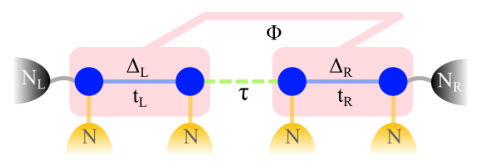
<figcaption class="paper-figure-caption"><b>Fig 1.</b> FIG. 1. A phase-biased Josephson junction formed by two minimal Kitaev chains (red boxes). The quantum dots (blue filled circles) in the left (L) and right (R) minimal Kitaev chain are coupled by electron tunneling tα and p-wave pair potential ∆α characterizing crossed Andreev reflections, here α = L, R. Also, the left and right minimal Kitaev chains are connected by regular electron tunneling τ and the supercon- ducting phase difference between their pair potentials is con- trolled by an external magnetic flux Φ applied through the SQUID loop (red arm). All the quantum dots are coupled to normal reservoirs (N, yellow) which are sources of non- Hermitian effects, while the the first...</figcaption>
</figure>
<figure class="paper-figure-card">
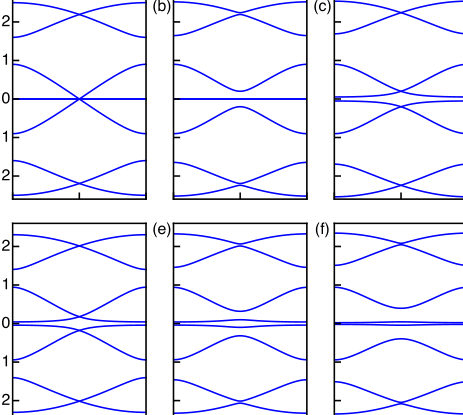
<figcaption class="paper-figure-caption"><b>Fig 2.</b> FIG. 2. Energy spectrum as a function of the superconducting phase difference ϕ in the Hermitian regime, where (a-c) and (d-f) correspond, respectively, to tα = ∆α and tα = 0.8∆α for distinct values of the onsite energies εαj. In the left column (a,d), all onsite energies are equal to zero εαj = 0; in the mid- dle column (b,e), only the onsite energy of the leftmost QD is finite (εL1 ̸= 0); in the right column (c,f), only the energies of the outer QDs are finite (εL1 = εR2 ̸= 0). Parameters: τ = 0.9∆, ∆α ≡∆</figcaption>
</figure>
<figure class="paper-figure-card">
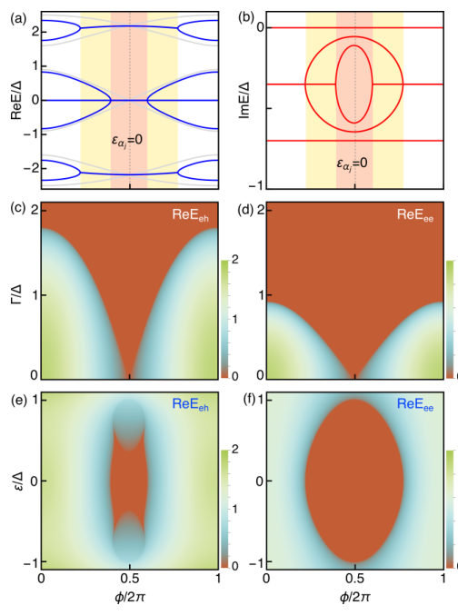
<figcaption class="paper-figure-caption"><b>Fig 3.</b> FIG. 3. (a,b) Energy spectrum versus ϕ in the non-Hermitian regime (ΓLj ̸= 0, ΓRj = 0) at ∆α = tα and εαj = 0, with (a) and (b) showing the real (Re) and imaginary (Im) parts, re- spectively. The ends of the orange and yellow shaded regions mark the position of Andreev EPs emerging at zero and finite Re energies, while the gray curves in (a) correspond to the energies in the Hermitian regime. (c) Real part of the differ- ence between the first positive and first negative excited levels closest to zero Re energy versus ϕ and Γ ≡ΓLj. (d) Same as (a) but for the highest two positive levels. (e,f) Same quantity as in (c,d) as a function of ϕ and onsite energy ε ≡εαj. Pa- rameters: τ = 0.9, ∆α...</figcaption>
</figure>
<figure class="paper-figure-card">
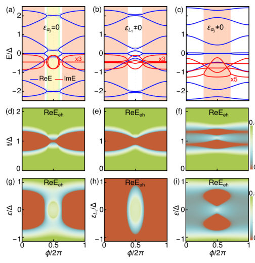
<figcaption class="paper-figure-caption"><b>Fig 4.</b> FIG. 4. (a,b) Real (blue) and imaginary (red) parts of the energy spectrum versus ϕ in the non-Hermitian regime for ∆α ̸= tα at distinct values of the onsite energies and cou- plings: (a,b) for ΓLj ̸= 0, ΓRj = 0, while (c) for ΓL1,R2 ̸= 0, ΓL2,R1 = 0. The ends of the red, yellow, and green shaded re- gions mark the positions of the Andreev EPs emerging due to the coalescence of lowest positive and lowest negative levels, lowest positive (negative) and first excited positive (negative) levels, and highest positive (negative) and highest positive (negative) levels, respectively. (d-f) Real part of the differ- ence between the first positive and first negative excited lev- els closest to zero...</figcaption>
</figure>
<figure class="paper-figure-card">
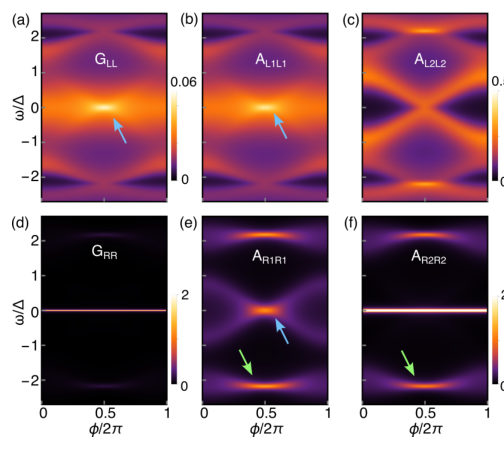
<figcaption class="paper-figure-caption"><b>Fig 5.</b> FIG. 5. Local conductance Gαα and spectral function Aαjαj as a function of frequency ω and ϕ at ∆α = tα and ΓLj ̸= 0, ΓRj = 0. The conductance is given in units of e2/h. In (e,f), the color scale is cut off at 2 for visualization. The light blue (green) arrows indicate the appearance of the zero (finite) Re energy line connecting EPs found at the sweet spot, see Fig. 3. Parameters: τ = 0.9, ∆α ≡∆, εαj = 0, ΓLj = 0.7∆, ΓRj = 0.</figcaption>
</figure>
</div>

<p><strong>Summary.</strong> This paper explores how coupling minimal Kitaev chain Josephson junctions to normal leads introduces non-Hermiticity, leading to complex Andreev spectra. The key finding is the realization of controllable Andreev Exceptional Points (EPs) whose existence depends critically on the superconducting phase difference ($\phi$). This work demonstrates that non-Hermitian physics offers a robust resource for engineering novel topological phases in superconducting quantum devices.</p>
<p><strong>Why it may be interesting.</strong> The explicit connection between non-Hermiticity (from open systems) and the emergence of topological features like EPs provides a powerful new tool for engineering quantum states in superconducting circuits, relevant to advanced condensed matter physics.</p>
<details>
<summary>Detailed structure</summary>
<p><strong>Main problem.</strong> The study investigates how non-Hermiticity, introduced via coupling to normal reservoirs, enables stable topological states in Josephson junctions formed by minimal Kitaev chains.</p>
<p><strong>Main result.</strong> The system exhibits Andreev Exceptional Points (EPs) whose existence and properties are controlled by the superconducting phase difference ($\phi$), allowing for the engineering of non-Hermitian topological phases.</p>
<p><strong>Method.</strong> Theoretical analysis involving the retarded Green's function in Nambu space, solving for energy poles, and analyzing symmetries like $  ext{PHS}^\dagger$.</p>
<p><strong>Model / system.</strong> The physical system is a Josephson junction connecting two minimal Kitaev chains. The model incorporates non-Hermiticity through coupling to normal reservoirs ($\Gamma$), leading to an effective complex Andreev spectrum.</p>
<p><strong>Key observables.</strong> Andreev Exceptional Points (EPs) and lines, the superconducting phase difference ($\phi$), local and nonlocal conductances ($G_{LL}, G_{-LR}$), and spectral functions.</p>
<p><strong>Important parameters / regimes.</strong> Superconducting phase difference ($\phi$), non-Hermiticity strength ($\Gamma$), onsite energies ($\epsilon_{\alpha j}$), and coupling ratios ($\Delta_\alpha/t_\alpha$).</p>
<p><strong>Assumptions / limitations.</strong> The analysis relies on the zero-frequency approximation for self-energy and utilizes symmetry arguments (e.g., $ ext{PHS}^\dagger$) to characterize topological protection.</p>
<p><strong>Figures summary.</strong> Figures illustrate the energy spectrum vs. $\phi$ showing EP crossings, and conductance measurements ($G_{LL}, G_{LR}$) confirming signatures of EPs at both zero and finite real energies.</p>
<p><strong>Paper structure.</strong> The paper progresses from establishing the non-Hermitian Hamiltonian and symmetry constraints to analyzing the emergence of Andreev EPs as a function of $\phi$. It then details how these EPs can be robustly protected by symmetries, even away from ideal 'sweet spot' parameters. Finally, it discusses measurable signatures using local and nonlocal conductance.</p>
</details>
<details>
<summary>Abstract</summary>
<p>We consider Josephson junctions formed by two minimal Kitaev chains and investigate how the interplay between non-Hermiticity and superconducting phase difference enables the realization of stable topological states that do not exist in the Hermitian realm. In particular, we focus on non-Hermiticity produced by coupling the minimal Kitaev chain Josephson junction to normal reservoirs, which renders the system open and characterized by a complex Andreev spectrum. Interestingly, we find that this complex spectrum hosts second order exceptional points, where a pair of eigenvalues and their respective eigenvectors coalesce, and are fully controlled by the superconducting phase difference. Depending on the spatial unequal distribution of non-Hermiticity, these Andreev exceptional points can appear at zero or finite energies connecting stable energy lines protected by non-Hermitian topology. Moreover, tuning the system parameters, such as onsite energies, non-Hermiticity, or electron cotunneling, the Andreev exceptional points give rise to Andreev exceptional lines enclosing protected two-dimensional zero real energy areas. We also discuss potential detection schemes of Andreev exceptional points by using local and nonlocal conductance signatures. Our results demonstrate the utility of non-Hermiticity from normal reservoirs as a useful resource for engineering non-Hermitian topological phases in minimal Kitaev chain Josephson junctions.</p>
</details>
<p><sub><a href="#top">↑ back to top</a></sub></p>

<p><a id="paper-2606.24670"></a></p>
<h3 id="simulating-the-haldane-model-in-ultra-clean-gaas-heterostructures"><a href="http://arxiv.org/abs/2606.24670v1">Simulating the Haldane model in ultra-clean GaAs heterostructures</a></h3>
<p><strong>Authors:</strong> Francesco Cioni, Lorenzo Cavicchi, Fabio Taddei, Marco Polini<br>
<strong>Type:</strong> theory · <strong>Category:</strong> other · <strong>PDF:</strong> <a href="https://arxiv.org/pdf/2606.24670v1">https://arxiv.org/pdf/2606.24670v1</a><br>
<strong>Analysis basis:</strong> full PDF text, analyzed in chunks
<strong>Topic relevance:</strong> 🔥 <code>analog quantum simulation</code> <strong>4/5</strong> · <code>exotic spin models in light-matter</code> <strong>3/5</strong> · <code>non-equilibrium dynamics</code> <strong>2/5</strong> · <code>Keldysh / 2PI / non-Gaussian methods</code> <strong>1/5</strong> · <code>spintronics-quantum-optics interface</code> <strong>1/5</strong></p>
<div class="figure-strip-hint">↔ Scroll figures horizontally</div>
<div class="paper-figures-scroll">
<figure class="paper-figure-card">
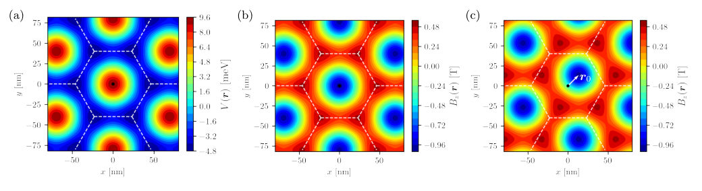
<figcaption class="paper-figure-caption"><b>Fig 1.</b> FIG. 1. Panel (a) Crystal field V (r) as obtained from Eq. (3). Panel (b) PMF Bz(r) as obtained from Eq. (4). Panel (c) PMF shifted by a vector r0 with respect to the crystal field, i.e. Bz(r −r0). Parameters are fixed to be a0 = 80 nm, W = 1.57 meV, and βΦ0/2π = 330 mT. In all panels, the black dot in the center of the figure refers to the origin of the axis and is added as a guide for the eye.</figcaption>
</figure>
<figure class="paper-figure-card">
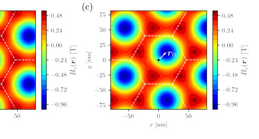
<figcaption class="paper-figure-caption"><b>Fig 2.</b> Fig. 1 displays the spatial profiles of V (r) and Bz(r) in- troduced in Eqs. (3) and (4). Panel (a) of Fig. 1 shows that the crystal field generates an array of attractive wells arranged on a D6h-symmetric honeycomb lattice. The PMF configuration depicted in panel (b) yields a similar</figcaption>
</figure>
<figure class="paper-figure-card">
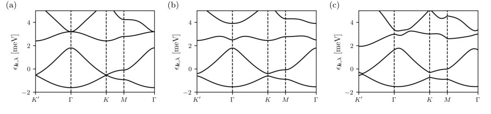
<figcaption class="paper-figure-caption"><b>Fig 3.</b> FIG. 2. Energy bands, along the high-symmetry path K′ −Γ −K −M −Γ in the BZ, for different magnetic-field patterns. (a) βΦ0/2π = 0 and r0 = 0. (b) βΦ0/2π = 330 mT and r0 = 0. (c) βΦ0/2π = 330 mT and r0 = a0(−0.45, −0.43). Other parameters are chosen as a0 = 80 nm, m∗= 0.062 me, and W = 1.57 meV.</figcaption>
</figure>
<figure class="paper-figure-card">
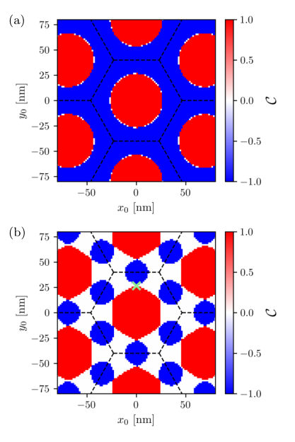
<figcaption class="paper-figure-caption"><b>Fig 4.</b> FIG. 3. Topological phase diagram. The Chern number C of the lowest band ϵk,λ=1 as a function of the shift vector r0 = (x0, y0). (a) βΦ0/(2π) = 33 mT. (b) βΦ0/(2π) = 330 mT. All other parameters are fixed as in Fig. 2. The light-green cross marks the gap-closing point r⋆ 0. The dashed black lines outline the hexagonal UC of the direct lattice.</figcaption>
</figure>
<figure class="paper-figure-card">
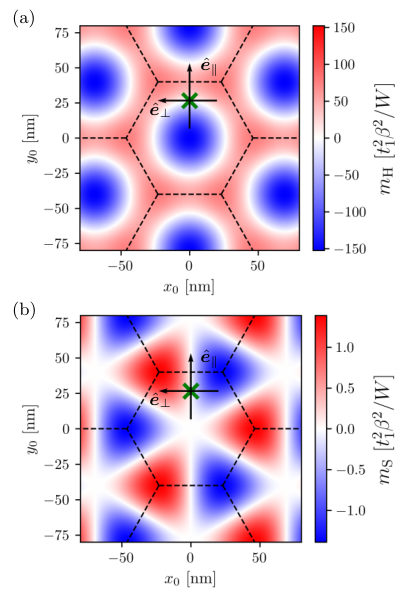
<figcaption class="paper-figure-caption"><b>Fig 5.</b> FIG. 4. (a) Haldane mass mH from Eq. (15a). (b) Semenoff mass mS from Eq. (15b). For comparison, we express both masses in units of the energy t2 1β2/W. The black cross marks the gap-closing point r⋆ 0, and the axes indicate the decoupling directions ˆe∥and ˆe⊥. Here we fixed βΦ0/(2π) = 33 mT. All other parameters are fixed as in Fig. 2.</figcaption>
</figure>
</div>

<p><strong>Summary.</strong> The paper proposes an experimental route to realize the Haldane model—a key Chern insulator—by combining patterned electrostatic potentials with periodically modulated magnetic fields in GaAs heterostructures. Using advanced theoretical techniques like plane-wave diagonalization, the authors demonstrate that this combination successfully engineers non-trivial band topology, controllable via geometric misalignment parameters.</p>
<p><strong>Why it may be interesting.</strong> This work provides a concrete, materials-based blueprint for realizing topological quantum matter using external electric and magnetic field engineering, which is highly relevant for solid-state quantum simulation.</p>
<details>
<summary>Detailed structure</summary>
<p><strong>Main problem.</strong> The work theoretically investigates simulating the Haldane model, a minimal Chern insulator realization, using solid-state systems to engineer topological band structures.</p>
<p><strong>Main result.</strong> Superimposing engineered electrostatic lattices with spatially periodic magnetic fields can induce non-trivial band topology, successfully mapping the low-energy physics onto the Haldane model Hamiltonian.</p>
<p><strong>Method.</strong> The study employs plane-wave diagonalization techniques and utilizes advanced mathematical tools like the Fukui-Hatsugai-Suzuki algorithm to calculate topological invariants (Chern number).</p>
<p><strong>Model / system.</strong> The system is modeled as spinless, non-interacting electrons in a 2D honeycomb lattice realized in ultra-clean GaAs/AlGaAs heterostructures. The Hamiltonian incorporates kinetic energy, crystal potential, and coupling to engineered vector potentials derived from patterned magnetic fields.</p>
<p><strong>Key observables.</strong> Chern number (C), band dispersion ($\epsilon_k$), effective mass terms ($m_H, m_S$).</p>
<p><strong>Important parameters / regimes.</strong> Relative shift $\mathbf{r}_0$ between the potential and field patterns; magnetic flux amplitude ($eta\Phi_0/2\pi$); lattice constant $a_0$.</p>
<p><strong>Assumptions / limitations.</strong> The analysis relies on projecting the full Hamiltonian onto a low-energy three-plane-wave manifold around the K and K' valleys, neglecting higher-shell harmonics.</p>
<p><strong>Figures summary.</strong> Figures illustrate spatial profiles of potentials/fields for different shifts ($\mathbf{r}_0$), energy band structures along high-symmetry paths showing gap opening, and topological phase diagrams mapping Chern number $C$ vs. control parameters.</p>
<p><strong>Paper structure.</strong> The paper progresses from defining the general Hamiltonian in a solid-state context to analyzing symmetries (P, T) and then deriving the low-energy effective Dirac Hamiltonian by treating magnetic perturbations perturbatively up to $O(A^2)$.</p>
</details>
<details>
<summary>Abstract</summary>
<p>The Haldane model represents the minimal lattice-based realization of a Chern insulator, exhibiting a quantized Hall conductance in the absence of Landau levels. Despite its conceptual elegance, the implementation in crystalline solids of the requisite pattern of Peierls phases breaking time-reversal symmetry remains experimentally demanding. In this work, we theoretically investigate the possibility to simulate the Haldane model in ultra-clean GaAs/AlGaAs heterostructures. Our proposal relies on recent experiments in which a high-mobility two-dimensional electron gas is subject to a gate-defined honeycomb electrostatic potential and a laterally periodic magnetic field generated by patterned ferromagnetic structures. The combined electrostatic and magnetic superlattices furnish a viable route to emulate the topological properties of the Haldane model.</p>
</details>
<p><sub><a href="#top">↑ back to top</a></sub></p>

<p><a id="paper-2606.23895"></a></p>
<h3 id="fine-structure-of-the-cyclotron-resonance-in-heterobilayers-of-proximitized-graphene-and-transition-metal-dichalcogenides"><a href="http://arxiv.org/abs/2606.23895v1">Fine structure of the cyclotron resonance in heterobilayers of proximitized graphene and transition metal dichalcogenides</a></h3>
<p><strong>Authors:</strong> M. A. Rakitskii, K. S. Denisov, N. S. Averkiev<br>
<strong>Type:</strong> theory · <strong>Category:</strong> other · <strong>PDF:</strong> <a href="https://arxiv.org/pdf/2606.23895v1">https://arxiv.org/pdf/2606.23895v1</a><br>
<strong>Analysis basis:</strong> full PDF text, analyzed in chunks
<strong>Topic relevance:</strong> 🔥 <code>spintronics-quantum-optics interface</code> <strong>4/5</strong> · <code>exotic spin models in light-matter</code> <strong>3/5</strong> · <code>Keldysh / 2PI / non-Gaussian methods</code> <strong>1/5</strong></p>
<div class="figure-strip-hint">↔ Scroll figures horizontally</div>
<div class="paper-figures-scroll">
<figure class="paper-figure-card">
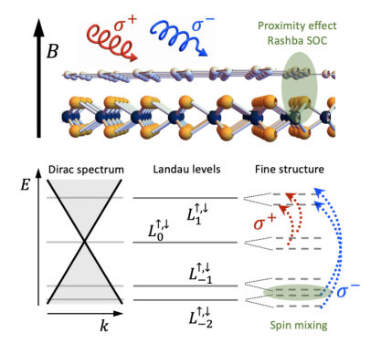
<figcaption class="paper-figure-caption"><b>Fig 1.</b> FIG. 1. Cyclotron resonance in a graphene/TMDs heterobi- layer and associated transitions between Landau levels, Ls n.</figcaption>
</figure>
<figure class="paper-figure-card">
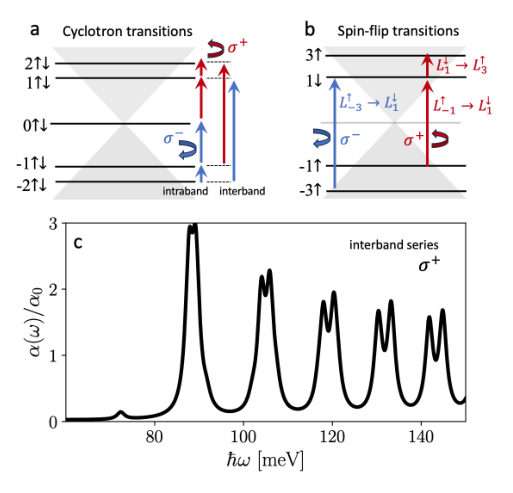
<figcaption class="paper-figure-caption"><b>Fig 2.</b> FIG. 2. (a) Cyclotron resonance intra- and interband transi- tions between LLs in a monolayer graphene are active for σ+</figcaption>
</figure>
<figure class="paper-figure-card">
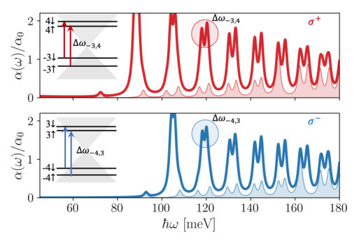
<figcaption class="paper-figure-caption"><b>Fig 3.</b> FIG. 3. Absorption α±(ℏω) for σ+ (a) and σ−(b) polariza- tions; the shaded regions show a partial contribution due to spin-flip transitions allowed in the presence of HR. The in- set in (a) [(b)] shows the frequency difference for Ls −3 →Ls 4 [Ls −4 →Ls 3] responsible for a double peak fine structure around ℏω−3,4 [ℏω−4,3]. The parameters: ν = 12, B = 0.6 T, ℏΩ0 = 5 meV, λR = 1.5 meV, Γ = 1 meV.</figcaption>
</figure>
<figure class="paper-figure-card">
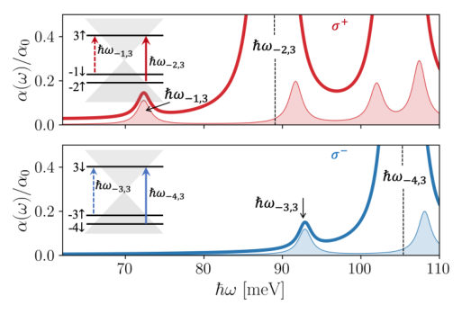
<figcaption class="paper-figure-caption"><b>Fig 4.</b> FIG. 4. Absorption α±(ℏω) for σ+ (a) and σ−(b) polariza- tions. The shaded regions show the CCR contribution due to HR-induced spin-flip absorption. At ν = 12, there is a well- resolved CCR line L↓ −1 →L↑ 3 for (a) and to L↑ −3 →L↓ 3 for (b). The corresponding CCR transitions are shown in insets.</figcaption>
</figure>
</div>

<p><strong>Summary.</strong> This theoretical study investigates how proximity effects from TMDs induce spin-orbit coupling in graphene, modifying its cyclotron resonance spectrum. The authors predict characteristic fine double-peak structures and new spin-flip absorption lines (CCRs). These modifications lead to a measurable magneto-optical response, providing a powerful spectroscopic tool for characterizing spin interactions in van der Waals heterostructures.</p>
<p><strong>Why it may be interesting.</strong> This work is highly relevant because it uses optical spectroscopy (CR) to probe subtle quantum phenomena—namely spin-orbit coupling and spin texture—in 2D materials heterostructures, which are key areas for developing spintronic devices.</p>
<details>
<summary>Detailed structure</summary>
<p><strong>Main problem.</strong> The study analyzes the fine structure of cyclotron resonance (CR) and combined cyclotron resonance (CCR) absorption in heterobilayers formed by proximitizing graphene with transition metal dichalcogenides (TMDs). The focus is on how proximity-induced spin interactions modify these optical responses.</p>
<p><strong>Main result.</strong> The theory predicts a polarization-dependent fine double-peak structure in the main interband CR transitions and identifies additional spin-flip absorption lines corresponding to CCRs. Furthermore, it shows that these effects lead to a measurable Magneto-Optical Kerr Effect (MOKE) signal.</p>
<p><strong>Method.</strong> The analysis employs an effective Dirac model augmented by proximity terms ($H_{vz}, H_{st}, H_R$) and calculates the optical absorption spectrum using the Kubo–Greenwood formula in the Landau Level basis. Numerical diagonalization is used to incorporate the Rashba coupling effects.</p>
<p><strong>Model / system.</strong> The system is a heterobilayer of graphene proximitized by TMDs, modeled with an effective Hamiltonian including valley-Zeeman ($H_{vz}$), staggered potential ($H_{st}$), and crucial spin-orbit coupling via the Rashba term ($H_R$). The analysis operates in the Landau Level basis derived from minimal coupling.</p>
<p><strong>Key observables.</strong> Cyclotron Resonance (CR) absorption spectrum, Combined Cyclotron Resonance (CCR) lines, Magneto-Optical Kerr Effect (MOKE) signal, and polarization dependence ($\sigma^+$ vs $\sigma^-$).</p>
<p><strong>Important parameters / regimes.</strong> Moderate magnetic fields ($0.5–2$ T), where cyclotron energies dominate proximity terms; the strength of the Rashba coupling ($\lambda_R$).</p>
<p><strong>Assumptions / limitations.</strong> The analysis assumes that the LL basis derived from minimal coupling is sufficient, and it treats the Rashba term perturbatively or within a truncated diagonalization scheme.</p>
<p><strong>Figures summary.</strong> Figures illustrate CR/CCR absorption spectra showing fine double-peak structures (Figure 3) and demonstrate selection rules for these transitions. Figure 4 specifically shows resolved CCR lines below main interband CR lines at specific magnetic fields.</p>
<p><strong>Paper structure.</strong> The paper establishes the physical system and Hamiltonian, details the theoretical methods using LL basis diagonalization, calculates the key observables (CR/CCR absorption), and concludes by interpreting the results in terms of measurable MOKE signals and experimental verifications.</p>
</details>
<details>
<summary>Abstract</summary>
<p>A monolayer graphene and its Dirac electrons can be equipped with an enhanced spin-orbit coupling (SOC) when proximitized by other van der Waals (vdW) materials, such as transition metal dichalcogenides (TMDs). In this work we analyze the cyclotron resonance (CR) absorption of such heterobilayers at quantizing magnetic fields in the presence of proximity-induced spin interactions, including the spin-pseudospin Rashba coupling. We evaluate the spin-textured wave functions of the Landau levels and calculate the absorption spectrum paying special attention to its spin proximity induced modifications. We reveal the formation of a fine double-peak structure of the main interband CR transitions, as well as the presence of additional spin-flip absorption, the combined cyclotron resonance (CCR), centered at different resonant frequencies. The selection rules for CCRs are identified and complemented by the perturbation theory analysis. We also discuss the polarization dependence of the absorption and the proximity-induced emerging magneto-optical responses. Our theory explains the effect of proximity-induced spin interactions for Dirac electrons cyclotron resonance and points out at its experimental verifications.</p>
</details>
<p><sub><a href="#top">↑ back to top</a></sub></p>

<p><a id="paper-2606.24108"></a></p>
<h3 id="multiple-phases-in-k2cr3as3-a-playground-for-manipulating-topological-superconductivity"><a href="http://arxiv.org/abs/2606.24108v1">Multiple phases in K2Cr3As3: a playground for manipulating topological superconductivity</a></h3>
<p><strong>Authors:</strong> Seigo Ogawa, Tomoki Miyoshi, Saki Uchida, Kazuaki Matano, Shinji Kawasaki, Yoshihiko Inada, Guo-qing Zheng<br>
<strong>Type:</strong> experiment · <strong>Category:</strong> other · <strong>PDF:</strong> <a href="https://arxiv.org/pdf/2606.24108v1">https://arxiv.org/pdf/2606.24108v1</a><br>
<strong>Analysis basis:</strong> full PDF text, analyzed in chunks
<strong>Topic relevance:</strong> <code>exotic spin models in light-matter</code> <strong>3/5</strong> · <code>spintronics-quantum-optics interface</code> <strong>3/5</strong> · <code>driven-dissipative phase transition</code> <strong>2/5</strong> · <code>Kondo &amp; dissipative impurity</code> <strong>1/5</strong> · <code>analog quantum simulation</code> <strong>1/5</strong> · <code>methods for driven-dissipative</code> <strong>1/5</strong> · <code>non-equilibrium dynamics</code> <strong>1/5</strong> · <code>quantum measurements</code> <strong>1/5</strong></p>
<div class="figure-strip-hint">↔ Scroll figures horizontally</div>
<div class="paper-figures-scroll">
<figure class="paper-figure-card">
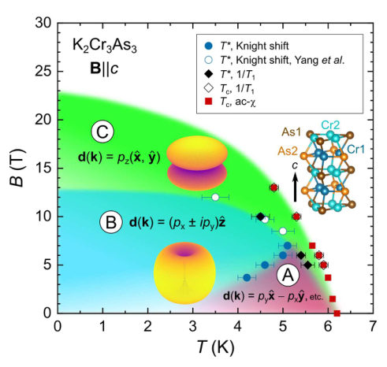
<figcaption class="paper-figure-caption"><b>Fig 1.</b> FIG. 1. Multiple superconducting phases of K2Cr3As3 for B∥c. The Tc values, represented by red squares and open di- amonds, were determined by ac susceptibility and 1/T 1 mea- surements. The characteristic temperatures T ∗, represented by blue circles (open and filled) and black diamonds, were de- termined from the Knight shift and/or 1/T 1 measurements. The errors in T ∗represented by blue circles were estimated by assuming that the uncertainty is equal to the point (temper- ature) interval around the position indicated by the dashed arrow in Fig. 2(a). The errors in T ∗represented by black diamonds were estimated from the 1/T 1 measurement tem- perature interval. The illustrations within...</figcaption>
</figure>
<figure class="paper-figure-card">
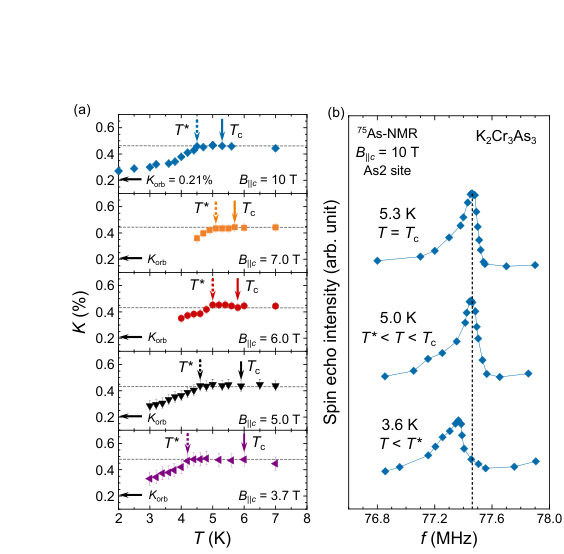
<figcaption class="paper-figure-caption"><b>Fig 2.</b> FIG. 2. Temperature dependence of Knight shift and 75As- NMR spectra. (a) Temperature and field dependences of K for B∥c. The solid arrow indicates Tc. The dashed arrow indi- cates T ∗, the temperature at which K begins to decrease upon further cooling. The error in K was estimated by assuming that the peak uncertainty equaled the frequency resolution of the NMR data. The value of Korb = 0.21% was determined from the linear relationship between K and bulk susceptibil- ity χ [22]. (b) Temperature dependence of 75As-NMR spectra (the center peak; +1/2 ↔−1/2 transition) at B∥c = 10 T for the As2 site. At B∥c = 10 T, Tc is 5.3 K, and T ∗is 4.5 K. The dashed line indicates the peak position of the...</figcaption>
</figure>
<figure class="paper-figure-card">
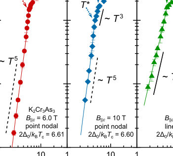
<figcaption class="paper-figure-caption"><b>Fig 3.</b> FIG. 3. Temperature dependence of the 75As-NMR 1/T1 for B∥c. (a)–(c) Temperature dependence of 1/T1 for B∥c = 6.0, 10, and 13 T. Solid and dashed arrows indicate Tc and T ∗, re- spectively. The red, blue, and green lines represent the results of fitting the data to a point-nodal gap with 2∆0/kBTc = 6.61 and 6.60, and a pz-wave line-nodal gap with 2∆0/kBTc = 5.47, respectively. The 1/T1 data were fitted below T ∗at 6.0 and 10 T and Tc at 13 T. The dashed and solid black lines serve as guides for T 5 and T 3, respectively. Error bars represent the standard deviations in theoretical fitting of the nuclear magnetization recovery curves.</figcaption>
</figure>
<figure class="paper-figure-card">
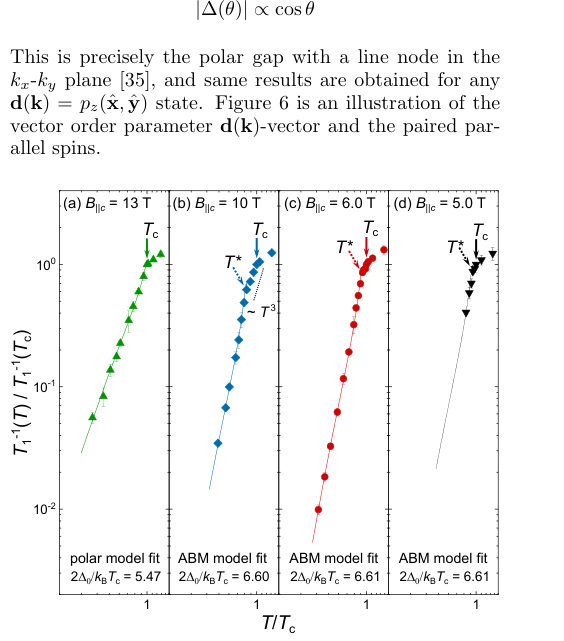
<figcaption class="paper-figure-caption"><b>Fig 4.</b> FIG. 4. Temperature dependence of the normalized 75As- NMR 1/T1 for B∥c. (a)–(d) Temperature dependences of the normalized 1/T1 for B∥c at 13, 10, 6.0, 5.0 T are shown. Solid and dashed arrows indicate Tc and T ∗, respectively. The green, blue, red, and black lines represent the results of fitting the polar model (2∆0/kBTc = 5.47) and the ABM model (2∆0/kBTc = 6.60, 6.61 and 6.61) to the data. The polar model fitting was performed below Tc, and the ABM model fitting was performed below T ∗. Error bars represent the standard deviations of the parameters. The dashed line serves as a guide for the temperature variation of T 3. .</figcaption>
</figure>
<figure class="paper-figure-card">
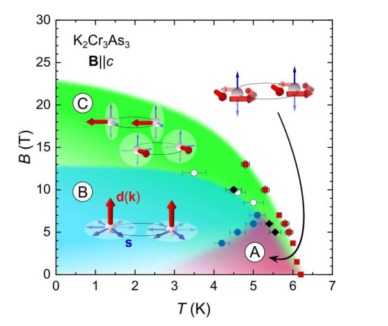
<figcaption class="paper-figure-caption"><b>Fig 5.</b> FIG. 6. Directions of the paired spins and d(k)-vector in each phase. Schematic illustration of the Cooper pairs and d(k)-vector in Phases A, B, and C. The white spheres repre- sent electrons forming Cooper pairs. The Cooper pair spins s and the d(k)-vector are indicated by blue and red arrows, respectively. A representative order parameter for Phase A, d(k) = pyˆx −pxˆy, is shown in the upper-right. This state can be regarded as a quantum superposition of the Sz = 1 and Sz = −1 components. For other two states of Phase A, although the d(k)-vector structures differ, they all realize a superposition of Sz = ±1 states. In Phase B, the d(k)-vector is aligned along the c-axis, leading to an Sz =...</figcaption>
</figure>
</div>

<p><strong>Summary.</strong> This work establishes K2Cr3As3 as a model spin-triplet superconductor by experimentally revealing three distinct superconducting phases (A, B, C). Using NMR measurements, the authors map out how the pairing symmetry and the direction of the d(k)-vector evolve under applied magnetic fields. These findings highlight the material's potential for manipulating topological quantum states.</p>
<p><strong>Why it may be interesting.</strong> While focused on superconductivity, the detailed mapping of topological phases and symmetry breaking in response to external fields provides a rich platform for studying emergent quantum order parameters relevant to advanced condensed matter physics.</p>
<details>
<summary>Detailed structure</summary>
<p><strong>Main problem.</strong> Investigating spin-triplet superconductivity, a state crucial for hosting Majorana bound states in quantum computing.</p>
<p><strong>Main result.</strong> The authors identified three distinct superconducting phases (A, B, and C) in K2Cr3As3, demonstrating the high tunability of its topological superconducting phases by manipulating magnetic fields.</p>
<p><strong>Method.</strong> Measurements utilized Nuclear Magnetic Resonance ($ ext{}^{75}  ext{As}$-NMR) to probe the spin susceptibility and gap structure, alongside $ac$ susceptibility measurements.</p>
<p><strong>Model / system.</strong> The study focuses on the Cr-based compound K2Cr3As3, which is proposed as a non-magnetic alternative to U-based superconductors. The analysis maps out the superconducting phase diagram using magnetic field (B) and temperature (T).</p>
<p><strong>Key observables.</strong> Knight shift ($K$), spin-lattice relaxation rate ($1/T_1$), and the evolution of the pairing vector $\mathbf{d}(\mathbf{k})$.</p>
<p><strong>Important parameters / regimes.</strong> Critical temperature ($T_c \ge 6.2 	ext{ K}$), applied magnetic field (up to $13 	ext{ T}$), and temperature dependence exponents ($\propto T^{-3}$ vs. $\propto T^{-5}$).</p>
<p><strong>Assumptions / limitations.</strong> The analysis relies on interpreting the temperature power laws of $1/T_1$ to distinguish between line-nodal and point-nodal gap structures.</p>
<p><strong>Figures summary.</strong> Figures illustrate the phase diagram showing multiple superconducting phases (A, B, C) as a function of magnetic field for $B\parallel c$, detailing characteristic temperatures ($T^*$) derived from NMR measurements.</p>
<p><strong>Paper structure.</strong> The paper systematically analyzes experimental signatures—NMR Knight shift and $1/T_1$ dependence—to map out the phase diagram, identifying distinct superconducting states characterized by different $\mathbf{d}(\mathbf{k})$-vector orientations and gap symmetries.</p>
</details>
<details>
<summary>Abstract</summary>
<p>Spin-triplet topological superconductors are rare but of fundamental interest as they can host Majorana bound states that can be used in fault-tolerant quantum computing. Recent efforts have been devoted to searching for spin-triplet states in U-based compounds, but these materials have a low transition temperature (Tc) and coexisting competing orders, which creates significant experimental challenges and often leads to contradictory conclusions. The Cr-based candidate K2Cr3As3 offers a promising alternative: it has a much higher Tc of 6.2 K and no magnetic order. Here we report a hallmark signature of spin-triplet superconductivity arising from the internal spin degrees of freedom via nuclear magnetic resonance measurements, and demonstrate the high tunability of the topological phases. We discovered three distinct superconducting phases and revealed the evolution of the paired-spins direction (d(k)-vector). At low magnetic fields, K2Cr3As3 evolves from a helical (Phase A) to a chiral state (Phase B) with a rotation of the d(k)-vector from in-plane to out-of-plane direction upon cooling, although both phases have point nodes in the gap. A linenodal gap is realized in the high-field Phase C, where the d(k)-vector lies in the basal plane. These findings establish K2Cr3As3 as a model spin-triplet superconductor and a promising platform for manipulating topological phases.</p>
</details>
<p><sub><a href="#top">↑ back to top</a></sub></p>

<p><a id="paper-2606.23806"></a></p>
<h3 id="nonrelativistic-spin-orbit-coupling-effects-in-odd-parity-coplanar-magnets"><a href="http://arxiv.org/abs/2606.23806v1">Nonrelativistic Spin-Orbit-Coupling Effects in Odd-Parity Coplanar Magnets</a></h3>
<p><strong>Authors:</strong> Dongling Liu, Zheng-Yang Zhuang, Di Zhu, Zhigang Wu, Zhongbo Yan<br>
<strong>Type:</strong> theory · <strong>Category:</strong> strongly correlated electrons · <strong>PDF:</strong> <a href="https://arxiv.org/pdf/2606.23806v1">https://arxiv.org/pdf/2606.23806v1</a><br>
<strong>Analysis basis:</strong> full PDF text, analyzed in chunks
<strong>Topic relevance:</strong> <code>exotic spin models in light-matter</code> <strong>3/5</strong> · <code>spintronics-quantum-optics interface</code> <strong>3/5</strong> · <code>Keldysh / 2PI / non-Gaussian methods</code> <strong>1/5</strong> · <code>analog quantum simulation</code> <strong>1/5</strong> · <code>driven-dissipative phase transition</code> <strong>1/5</strong></p>
<div class="figure-strip-hint">↔ Scroll figures horizontally</div>
<div class="paper-figures-scroll">
<figure class="paper-figure-card">
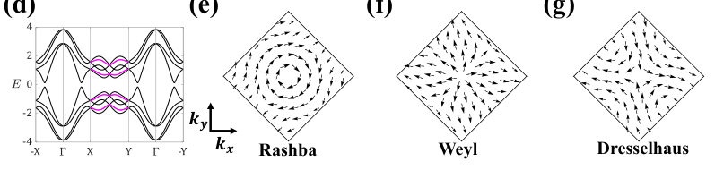
<figcaption class="paper-figure-caption"><b>Fig 1.</b> FIG. 1. (a) and (b) Two spin configurations for the bottom layer, OPAM1 and OPAM2, differing by a 90◦of the N´eeel vector. Red/blue arrows: opposite magnetic moments on sublattices A/B. Solid (dashed) lines: nearest-neighbor (next-nearest-neighbor) hoppings. (c) Symmetry-guided stacking for realizing effective Rashba (left), Weyl (middle), and Dresselhaus (right) SOC. The top layer is obtained from the bottom layer by the symmetry operation indicated in brackets. (d) Energy spectra: black lines (Rashba and Weyl cases, fully overlapped) and magenta lines (Dresselhaus case). The spectra for all three cases are identical along the -X-Γ-X and -Y-Γ-Y directions. (e–g) Spin textures of the...</figcaption>
</figure>
<figure class="paper-figure-card">
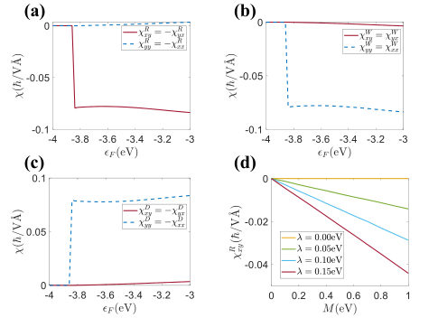
<figcaption class="paper-figure-caption"><b>Fig 2.</b> FIG. 2. Fermi energy-dependence of the SEE susceptibility tensor components for Rashba (a), Weyl (b), and Dresselhaus (c) case. (d) Dependence of χR xy on M for different values of λ. Shared param- eters: t1 = 1.0 eV, t2 = 0.6 eV, η = 0.5 eV, δ = 0.01 eV, lattice constant a = 5 ˚A. λ = 0.25 eV and M = 1.0 eV. Under this set of parameters, χxy can reach the value −0.08 ℏ/V ˚A.</figcaption>
</figure>
<figure class="paper-figure-card">
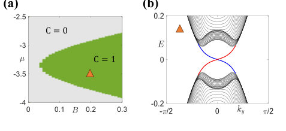
<figcaption class="paper-figure-caption"><b>Fig 3.</b> FIG. 3. (a) Topological phase diagram of HBdG(k). (b) Energy spec- trum of HBdG(k) with open (periodic) boundary conditions along the x (y) direction, corresponding to the orange triangle at (µ, B) = (−3.5, 0.2) in (a). The red (blue) solid line denotes a branch of chiral Majorana edge state on the right (left) boundary. Other parameters are: t1 = 1, t2 = 0.6, λ = 0.25, M = 1, η = 0.5 and ∆= 0.55.</figcaption>
</figure>
</div>

<p><strong>Summary.</strong> The authors propose that odd-parity coplanar magnets offer a nonrelativistic route to engineering strong Spin-Orbit Coupling (SOC) effects. By constructing a bilayer system and tuning its magnetic order, they demonstrate the realization of distinct Rashba, Weyl, and Dresselhaus spin textures. This work is significant because it shows this engineered SOC can achieve physical equivalence to its relativistic counterparts while offering unprecedented tunability.</p>
<p><strong>Why it may be interesting.</strong> This work provides a mechanism to engineer complex electronic couplings like SOC using structural/magnetic degrees of freedom rather than relying solely on heavy elements or intrinsic material properties, which is highly relevant for designing novel quantum materials.</p>
<details>
<summary>Detailed structure</summary>
<p><strong>Main problem.</strong> To find a nonrelativistic pathway to highly tunable Spin-Orbit Coupling (SOC) effects, overcoming the limitation that strong SOC is typically restricted to heavy elements and fixed by material symmetry.</p>
<p><strong>Main result.</strong> The proposed odd-parity coplanar magnet bilayer realizes Rashba, Weyl, and Dresselhaus spin textures nonrelativistically, achieving physical equivalence to relativistic SOC via superconducting phases.</p>
<p><strong>Method.</strong> Symmetry analysis combined with k.p expansion and projection onto low-energy continuum Hamiltonians was used to derive effective models for the system's electronic structure.</p>
<p><strong>Model / system.</strong> The model is an odd-parity coplanar magnet realized as a bilayer stack of two monolayer antiferromagnets, described by a multi-band Hamiltonian incorporating interlayer coupling and magnetic order parameters.</p>
<p><strong>Key observables.</strong> Rashba, Weyl, and Dresselhaus spin textures ($\langle s_x(\mathbf{k}) 
angle, \langle s_y(\mathbf{k}) 
angle$), Spin Edelstein Effect susceptibility ($\chi_{ij}$), and the existence of fully gapped chiral topological superconducting phases.</p>
<p><strong>Important parameters / regimes.</strong> Layer Néel vector tuning (used to switch SOC types); magnetic field ($B$) relative to pairing gap ($\Delta$); interlayer coupling ($\eta$).</p>
<p><strong>Assumptions / limitations.</strong> The analysis relies on symmetry requirements for the nonrelativistic mechanism and approximations like linear response theory for transport calculations.</p>
<p><strong>Figures summary.</strong> Figures illustrate the bilayer stacking strategy, energy spectra showing distinct SOC types (Rashba/Weyl/Dresselhaus), spin textures in momentum space, and topological phase diagrams mapping out superconducting regimes.</p>
<p><strong>Paper structure.</strong> The paper progresses by establishing the physical model via symmetry-guided stacking, deriving low-energy Hamiltonians for different SOC types, calculating characteristic spin textures and transport responses (SEE), and finally demonstrating the realization of topological superconductivity.</p>
</details>
<details>
<summary>Abstract</summary>
<p>Spin-orbit coupling (SOC) is a relativistic effect that underpins a broad spectrum of phenomena in condensed matter physics, from topological phases of matter to spintronic functionality. Its relativistic origin, however, restricts strong SOC to heavy-element materials and locks spin-momentum texture into a fixed, material-specific pattern. Here we show that odd-parity coplanar magnets offer a nonrelativistic pathway to highly tunable SOC effects. We construct a bilayer coplanar magnet via symmetry-guided stacking of two monolayer odd-parity altermagnets and demonstrate that Rashba, Weyl, and Dresselhaus spin textures can all be realized, and that the spin texture can be switched between these forms simply by tuning the layer Neel vector. Through the spin Edelstein effect and the realization of fully gapped chiral topological superconducting phases, we demonstrate that this nonrelativistic SOC achieves physical equivalence to its relativistic counterpart. Our findings identify a new class of odd-parity coplanar magnets as a versatile platform for engineering SOC effects.</p>
</details>
<p><sub><a href="#top">↑ back to top</a></sub></p>

<p><a id="paper-2606.24527"></a></p>
<h3 id="enabling-electrical-readout-of-neel-vector-reversal-in-a-van-der-waals-antiferromagnet"><a href="http://arxiv.org/abs/2606.24527v1">Enabling Electrical Readout of Néel vector reversal in a van der Waals Antiferromagnet</a></h3>
<p><strong>Authors:</strong> Raghvendra Posti, Ravi Kumar Bandepalli, Wenhao Liu, Anshuman Sahoo, Pratyush Saud, Zixin Zhai, Aswin L. N. Kondusamy, Zhenhong Cui, I-Hsuan Kao, Aalok Tiwari, Thomas Poirier, James H. Edgar, Kenji Watanabe, Takashi Taniguchi, Bing Lv, Jyoti Katoch, Simranjeet Singh<br>
<strong>Type:</strong> experiment · <strong>Category:</strong> other · <strong>PDF:</strong> <a href="https://arxiv.org/pdf/2606.24527v1">https://arxiv.org/pdf/2606.24527v1</a><br>
<strong>Analysis basis:</strong> full PDF text, analyzed in chunks
<strong>Topic relevance:</strong> <code>spintronics-quantum-optics interface</code> <strong>3/5</strong> · <code>Kondo &amp; dissipative impurity</code> <strong>1/5</strong> · <code>analog quantum simulation</code> <strong>1/5</strong> · <code>exotic spin models in light-matter</code> <strong>1/5</strong> · <code>non-equilibrium dynamics</code> <strong>1/5</strong></p>
<div class="figure-strip-hint">↔ Scroll figures horizontally</div>
<div class="paper-figures-scroll">
<figure class="paper-figure-card">
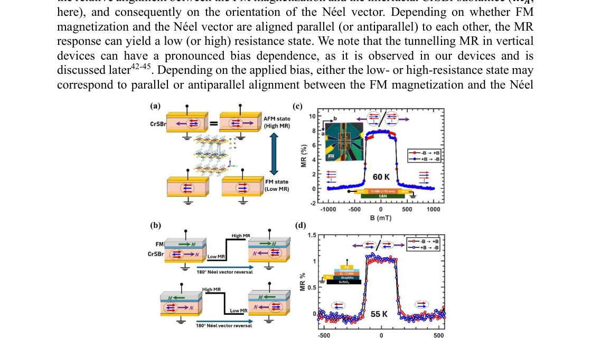
<figcaption class="paper-figure-caption"><b>Fig 1.</b> Fig. 1. Spin-dependent transport in CrSBr. (a) Schematic of the A-type AFM order in CrSBr (center). Each monolayer exhibits intralayer ferromagnetic coupling, while adjacent layers are coupled antiferromagnetically. In the AFM state, the two sublattices with magnetization vectors 𝑚𝐴 and 𝑚𝐵 (shown by red and blue arrows, respectively), are antiferromagnetically aligned, giving rise to a Néel vector, 𝑵̂ =</figcaption>
</figure>
<figure class="paper-figure-card">
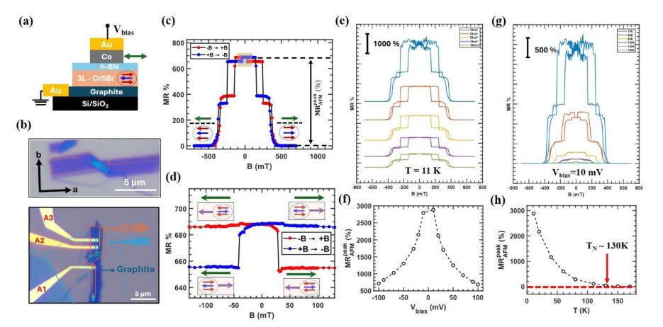
<figcaption class="paper-figure-caption"><b>Fig 2.</b> Fig. 2. Spin-filtering in Co/h-BN/CrSBr heterostructure. (a) Sideview schematic and measurement geometry of the Co/hBN/CrSBr device. The Co magnetization is indicated by a green arrow, while the AFM ordering in CrSBr is represented by anti-parallel sublattice moments shown in red and blue. (b) Top: optical image of the CrSBr flake, with the active region outlined, used in the final device. Bottom: optical image of the fabricated heterostructure device, with individual flakes labeled and outlined. The top contacts A1, A2, and A3 on the hBN barrier consist of 400 nm-wide Co, 450 nm-wide Au, and 450 nm-wide Co electrodes, respectively. (c) Vertical MR as a function of magnetic field along easy...</figcaption>
</figure>
<figure class="paper-figure-card">
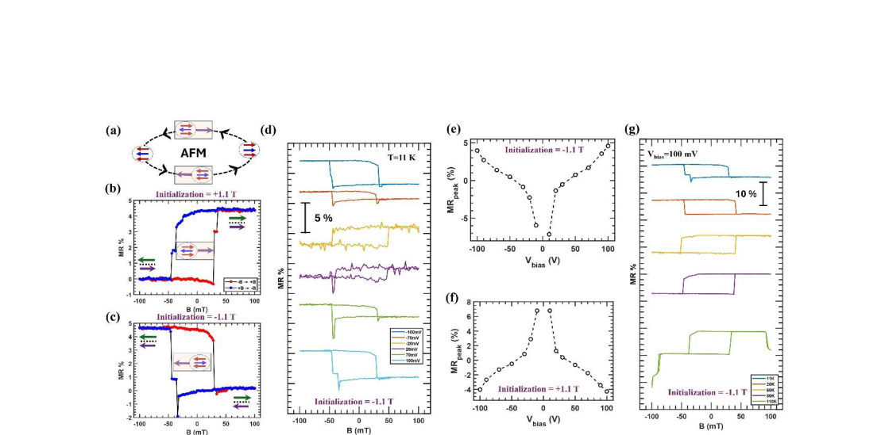
<figcaption class="paper-figure-caption"><b>Fig 3.</b> Fig. 3. Tunnel-transport detection of Néel vector reversal in CrSBr. (a) Schematic showing two antiparallel (180°) Néel vector states stabilized by opposite high-field initialization conditions. (b,c) Field-dependent MR measured below the SF transition following initialization by +1.1 T (b) and −1.1 T (c), at T=11 K and Vbias=100 mV. The opposite hysteresis polarity reflects the reversal of the Néel vector through spin-dependent tunneling between Co and CrSBr. The AFM sublattice moments are shown by red and blue arrows, their corresponding Néel vector by the purple arrow, and the Co magnetization by the green arrow. (d) Bias-dependent MR hysteresis measured below the SF field following −1.1...</figcaption>
</figure>
<figure class="paper-figure-card">
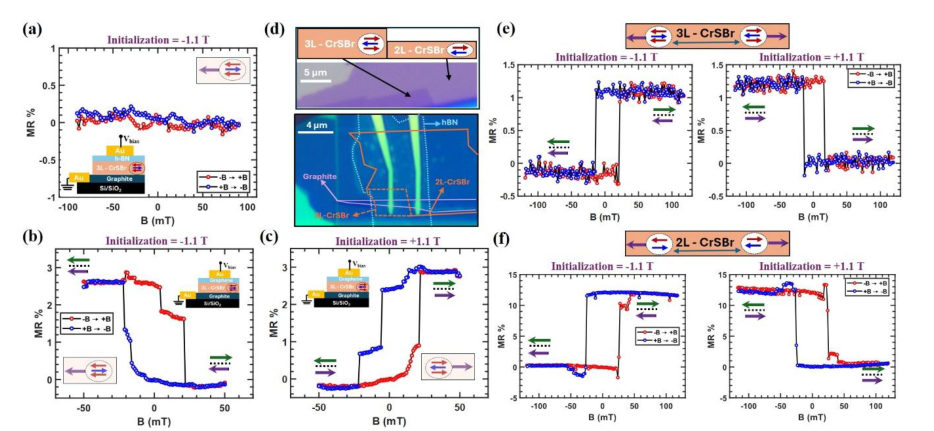
<figcaption class="paper-figure-caption"><b>Fig 4.</b> Fig. 4. Verification of Co-induced spin filtering and layer-resolved response in CrSBr. (a) MR response of an Au/hBN/CrSBr device A2 (sideview schematic shown in inset), between SF fields after initialization of the Néel state by -1.1 T, showing absence of hysteresis. (b, c) MR hysteresis measured between the SF fields in a Co/graphene/CrSBr device (Device B) after stabilization of the Néel state using magnetic fields of (b) −1.1 T and (c) +1.1 T. Inset: side-view schematic of the heterostructure and the corresponding magnetic configurations associated with the MR states. (d) CrSBr flake with even (2L) and odd (3L) layer regions outlined in the top panel, and the corresponding Co/hBN/CrSBr...</figcaption>
</figure>
</div>

<p><strong>Summary.</strong> This work reports an experimental breakthrough demonstrating electrical readout of Néel vector reversal in vdW antiferromagnets using $    ext{CrSBr}$. By constructing a tunnel junction with a ferromagnetic electrode, the authors achieved a measurable magnetoresistance (MR) signal that flips polarity when the AFM's magnetic order is reversed. This establishes a robust and generalizable strategy for building next-generation spintronic memory devices based on AFMs.</p>
<p><strong>Why it may be interesting.</strong> While primarily condensed matter/spintronics, the concept of using quantum transport phenomena (spin-dependent tunneling) to read out a fundamental symmetry property ($\mathbf{N}$ reversal) is highly relevant to developing novel quantum memory elements and controlling spin states in solid-state systems.</p>
<details>
<summary>Detailed structure</summary>
<p><strong>Main problem.</strong> The primary challenge addressed is demonstrating an electrical readout mechanism for the $180^\circ$ reversal of the Néel vector ($\mathbf{N}$) in thin-film van der Waals antiferromagnets (AFMs). This capability is crucial for developing next-generation AFM-based spintronic and magnonic memory devices.</p>
<p><strong>Main result.</strong> The authors successfully demonstrated this readout by utilizing a spin-dependent tunneling magnetoresistance (MR) measurement in $ ext{Co}/    ext{hBN}/   ext{CrSBr}$ heterostructures. They showed that reversing the Néel vector results in an opposite hysteresis pattern in the MR response, confirming electrical sensitivity to $\mathbf{N}$ orientation.</p>
<p><strong>Method.</strong> The methodology involves fabricating vertical tunnel junctions using mechanical exfoliation of vdW materials ($ ext{CrSBr}$, $  ext{hBN}$) and measuring the magnetoresistance (MR) as a function of applied magnetic field ($B$) and bias voltage ($V_{    ext{bias}}$).</p>
<p><strong>Model / system.</strong> The system is based on atomically thin, A-type vdW AFMs like $  ext{CrSBr}$, which possess sublattices ($\mathbf{m}_A$, $\mathbf{m}_B$) defining the Néel vector $\mathbf{\hat{N}}$. The measurement relies on the spin-dependent tunneling magnetoresistance (MR), modeled by the Jullière tunnelling model, between a ferromagnetic (FM) electrode ($    ext{Co}$) and the AFM layer.</p>
<p><strong>Key observables.</strong> Magnetoresistance (MR) response exhibiting clear two-level (low/high resistance) switching behavior; the reversal of this MR hysteresis pattern when the initial magnetic field polarity is reversed.</p>
<p><strong>Important parameters / regimes.</strong> The measurements are sensitive to bias voltage ($V_{	ext{bias}}$), temperature ($T$), and applied magnetic fields, with key transitions observed near $T_N \sim 130-140\ 	ext{K}$.</p>
<p><strong>Assumptions / limitations.</strong> The analysis assumes that the measured MR is dominated by spin-dependent tunneling through the tunnel barrier, making it sensitive to the relative alignment between the FM magnetization and the AFM sublattice magnetization.</p>
<p><strong>Figures summary.</strong> Figures illustrate schematics of the A-type AFM order and the proposed tunnel junction setup. Key results show field-dependent and bias-dependent MR hysteresis loops that reverse polarity when the initial magnetic field used for initialization is reversed, confirming $\mathbf{N}$ reversal.</p>
<p><strong>Paper structure.</strong> The paper progresses from identifying the critical gap (electrical readout of Néel vector) to proposing a specific tunnel junction geometry. It then details experimental measurements showing spin-valve behavior and conclusively proves Néel vector reversal by observing opposite MR hysteresis patterns upon reversing the initial high magnetic field polarization.</p>
</details>
<details>
<summary>Abstract</summary>
<p>Owing to its robustness against external perturbations and intrinsically ultrafast dynamics, the Néel vector in antiferromagnets (AFMs) can enable the development of next-generation spintronic and magnonic devices for memory and computing applications. To realize AFM-based magnetic memory devices, one of the key requirements is to demonstrate electrical readout of 180-degree reversal of Néel vector in thin film AFMs, which remains critically missing. In this work, we report experimental demonstration of a novel transport methodology to detect Néel vector reversal in atomically thin films of a van der Waals (vdW) based A-type AFM. For this, we utilize spin-dependent electronic band properties of CrSBr by coupling it to a spin-polarized layer, separated by a tunnel barrier. In this configuration, the spin-dependent tunnelling magnetoresistance (MR) becomes sensitive to the relative orientation between the magnetization of the reference electrode and the interfacial sublattice magnetization of the AFM layer, in turn enabling electrical detection of the Néel vector orientation. Importantly, the observed MR can also reveal 180-degree reversal of Néel vector in even-layers of CrSBr, wherein adjacent sublattice magnetic layers are exactly compensated and the net magnetization vanishes and thus establishes a broadly applicable strategy for electrical detection of Néel vector in vdW-based AFMs.</p>
</details>
<p><sub><a href="#top">↑ back to top</a></sub></p>

<p><a id="paper-2606.24663"></a></p>
<h3 id="ac-conductance-in-n-insb-structures-with-quantum-well-acoustic-studies"><a href="http://arxiv.org/abs/2606.24663v1">AC Conductance in n-InSb Structures with Quantum Well. Acoustic Studies</a></h3>
<p><strong>Authors:</strong> I. L. Drichko, I. Yu. Smirnov, Yu. M. Galperin, A. V. Suslov<br>
<strong>Type:</strong> experiment · <strong>Category:</strong> other · <strong>PDF:</strong> <a href="https://arxiv.org/pdf/2606.24663v1">https://arxiv.org/pdf/2606.24663v1</a><br>
<strong>Analysis basis:</strong> full PDF text, analyzed in chunks
<strong>Topic relevance:</strong> <code>driven-dissipative phase transition</code> <strong>2/5</strong> · <code>Keldysh / 2PI / non-Gaussian methods</code> <strong>1/5</strong> · <code>Kondo &amp; dissipative impurity</code> <strong>1/5</strong> · <code>analog quantum simulation</code> <strong>1/5</strong> · <code>correlated / nonlocal dissipation</code> <strong>1/5</strong> · <code>methods for driven-dissipative</code> <strong>1/5</strong> · <code>non-equilibrium dynamics</code> <strong>1/5</strong> · <code>spintronics-quantum-optics interface</code> <strong>1/5</strong></p>
<div class="figure-strip-hint">↔ Scroll figures horizontally</div>
<div class="paper-figures-scroll">
<figure class="paper-figure-card">
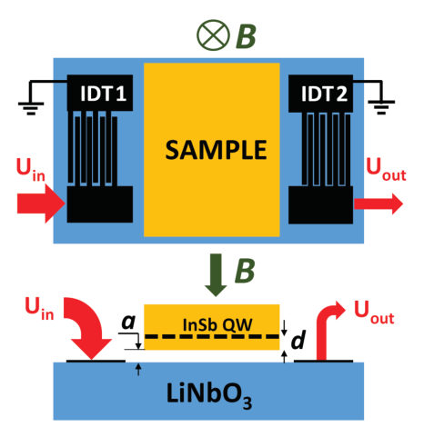
<figcaption class="paper-figure-caption"><b>Fig 1.</b> FIG. 1. Schematics of the experimental acoustic set-up: up- per panel - top view; lower panel - side view.</figcaption>
</figure>
<figure class="paper-figure-card">
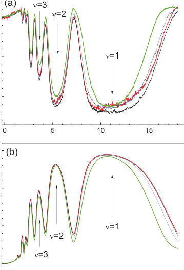
<figcaption class="paper-figure-caption"><b>Fig 2.</b> FIG. 2. Magnetic field dependences of ∆Γ = Γ(B)−Γ(B = 0) (a) and ∆v/v (b) at different temperatures. f=85 MHz, T (mK): 20 (red curve), 40 (black curve), 200 (blue curve), 500 (green curve). Marked by arrows are the filling factors ν.</figcaption>
</figure>
<figure class="paper-figure-card">
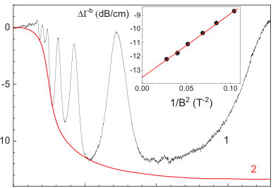
<figcaption class="paper-figure-caption"><b>Fig 3.</b> FIG. 3. 1 - the experimental curve ∆Γ(B); 2 - the envelope curve ∆Γb(B). Inset: ∆Γb as a function of 1/B2 in the region 3÷6 T. T =20 mK. f=85 MHz.</figcaption>
</figure>
<figure class="paper-figure-card">
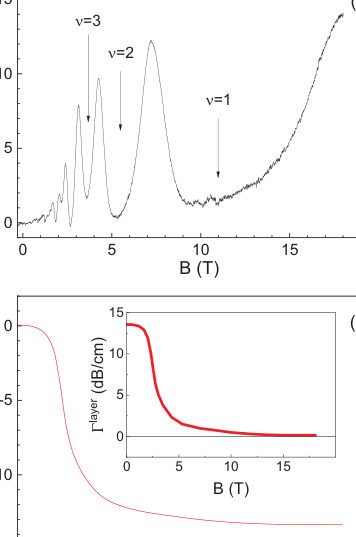
<figcaption class="paper-figure-caption"><b>Fig 4.</b> FIG. 4. a) The results of the subtraction: SAW absorption ΓQW(B) in the quantum well. b) Background SAW absorp- tion ∆Γb(B). Inset: Absolute value of the SAW absorption in the shunting layer. f=85 MHz, T =20 mK.</figcaption>
</figure>
<figure class="paper-figure-card">
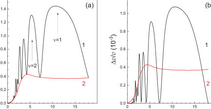
<figcaption class="paper-figure-caption"><b>Fig 5.</b> FIG. 5. Magnetic field dependence of the velocity change: a) 1 - experimental curve, black; 2 - envelope curve, red. b) 1 - After subtraction: ∆v/v contribution from the quantum well, black; 2 - ∆v/v contribution from the shunting layer, red; T =20 mK, f=85 MHz</figcaption>
</figure>
</div>

<p><strong>Summary.</strong> This experimental work uses Surface Acoustic Waves in a high-field magnet setup to study the AC conductance of an InSb quantum well. The key innovation is successfully separating the electrical response originating from the QW itself versus that from a parallel conducting layer. This allowed for detailed characterization, including determining the electron g-factor and confirming different conduction regimes like hopping transport.</p>
<p><strong>Why it may be interesting.</strong> While focused on solid-state transport, the use of high magnetic fields and quantum confinement effects touches upon topics relevant to strongly correlated electron systems and mesoscopic physics, which share theoretical overlap with open quantum system dynamics.</p>
<details>
<summary>Detailed structure</summary>
<p><strong>Main problem.</strong> The study aims to characterize the AC conductance of an n-InSb quantum well structure while simultaneously separating its contribution from a parallel conducting shunting layer.</p>
<p><strong>Main result.</strong> The authors successfully separated the conduction mechanisms, determined the electron g-factor in the QW using acoustic measurements under tilted magnetic fields, and confirmed hopping transport in both the QW and the shunting layer at high fields.</p>
<p><strong>Method.</strong> Acoustic methods utilizing Surface Acoustic Waves (SAW) generated on $  ext{LiNbO}_3$ are employed to measure changes in SAW attenuation ($\Delta\Gamma$) and velocity ($\Delta v/v$), which are then used to derive the complex AC conductance components.</p>
<p><strong>Model / system.</strong> The physical system is an n-InSb quantum well structure grown on GaAs, featuring a 21 nm QW shunted by a parallel conducting layer. Measurements are conducted in high magnetic fields (up to 18 T) and cryogenic temperatures (20–500 mK).</p>
<p><strong>Key observables.</strong> SAW attenuation change ($\Delta\Gamma$), relative velocity shift ($\Delta v/v$), complex AC conductance components ($\sigma_{ac}$), electron g-factor ($g$).</p>
<p><strong>Important parameters / regimes.</strong> Magnetic field $B$ (up to 18 T), Temperature $T$ (20–500 mK), Quantum Well width (21 nm).</p>
<p><strong>Assumptions / limitations.</strong> The ability to model and subtract the background contribution from the parallel conducting layer ($\Delta\Gamma_b(B) \propto 1/B^2$) is crucial for isolating the QW response.</p>
<p><strong>Figures summary.</strong> Figures show magnetic field dependences of $\Delta\Gamma$ and $\Delta v/v$, illustrating the subtraction process to isolate QW contributions, and presenting results confirming distinct conduction regimes (e.g., hopping vs. delocalized).</p>
<p><strong>Paper structure.</strong> The paper systematically analyzes SAW measurements to derive AC conductance components ($\sigma_{QW}, \sigma_{layer}$), uses background subtraction techniques to separate the two material contributions, and finally applies a coincidence technique in tilted fields to measure fundamental parameters like the g-factor.</p>
</details>
<details>
<summary>Abstract</summary>
<p>We studied the ac conductance of an $n$-InSb quantum well structure using acoustic methods in magnetic fields up to 18 T and at temperatures ranging from 20 to 500 mK. We attribute the unusual magnetic field dependences of surface acoustic wave (SAW) attenuation and velocity observed in the experiment to the presence of a conducting layer parallel to the quantum well in the sample. We successfully separated the contributions from both the quantum well and the shunting layer, enabling the identification of their distinct conduction mechanisms. Furthermore, by employing the coincidence technique, we determined the electron g-factor in the quantum well and investigated its dependence on the degree of spin polarization.</p>
</details>
<p><sub><a href="#top">↑ back to top</a></sub></p>

<p><a id="paper-2606.24199"></a></p>
<h3 id="band-offsets-and-stability-of-wsemath1060mathruclmath1061math-van-der-waals-charge-transfer-contacts"><a href="http://arxiv.org/abs/2606.24199v1">Band offsets and stability of WSe$_2$/RuCl$_3$ van der Waals charge-transfer contacts</a></h3>
<p><strong>Authors:</strong> Thomas S. Nielsen, Edvard Solbrekken, Christian Overby, Christian V-B. Fokdal, Alfred J. H. Jones, Zhihao Jiang, Chakradhar Sahoo, Kenji Watanabe, Takashi Taniguchi, Søren Ulstrup<br>
<strong>Type:</strong> experiment · <strong>Category:</strong> strongly correlated electrons · <strong>PDF:</strong> <a href="https://arxiv.org/pdf/2606.24199v1">https://arxiv.org/pdf/2606.24199v1</a><br>
<strong>Analysis basis:</strong> full PDF text, analyzed in chunks
<strong>Topic relevance:</strong> <code>driven-dissipative phase transition</code> <strong>2/5</strong> · <code>Keldysh / 2PI / non-Gaussian methods</code> <strong>1/5</strong> · <code>Kondo &amp; dissipative impurity</code> <strong>1/5</strong> · <code>analog quantum simulation</code> <strong>1/5</strong> · <code>methods for driven-dissipative</code> <strong>1/5</strong> · <code>non-equilibrium dynamics</code> <strong>1/5</strong></p>
<div class="figure-strip-hint">↔ Scroll figures horizontally</div>
<div class="paper-figures-scroll">
<figure class="paper-figure-card">
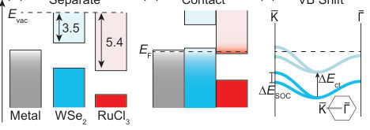
<figcaption class="paper-figure-caption"><b>Fig 1.</b> FIG. 1. Band alignments in a metal/WSe2/RuCl3 junction. (a) Diagram of valence and conduction band alignments in the separate materials referenced to a common vacuum level (Evac). Electron affinities are illustrated by double-headed arrows and given in units of eV [24, 26]. (b) Band alignments after contact formation and equilibration of Fermi level (EF). Grey, blue and red color gradients illustrate carrier filling in the two scenarios in (a)-(b). (c) Schematic of SL WSe2 valence band before (blue) and after (light-blue) contact formation. Charge transfer leads to an energy shift (∆Ect) placing the spin-orbit coupling split (∆ESOC) valence band states around EF. The bands are illustrated...</figcaption>
</figure>
<figure class="paper-figure-card">
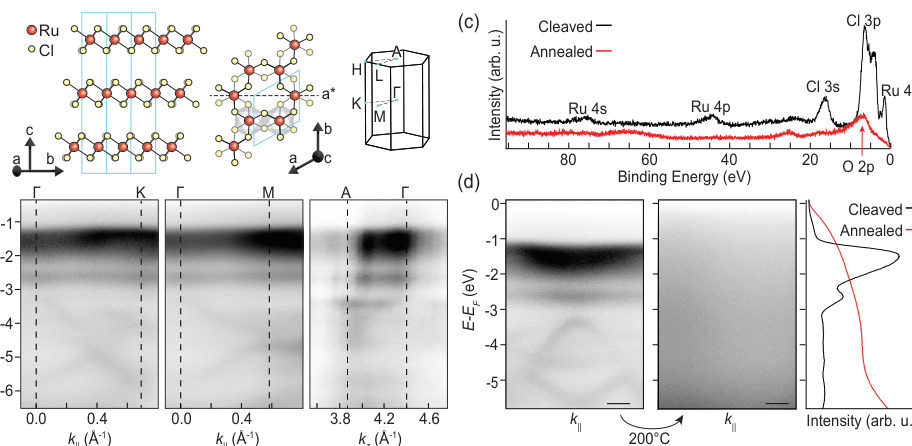
<figcaption class="paper-figure-caption"><b>Fig 2.</b> FIG. 2. Electronic structure of bulk RuCl3 and impact of heating. (a) Crystal structure of RuCl3 in the P3112 space group with black arrows showing the crystallographic axes. Left is a side view along the a* direction of the 3 layers in the unit cell. Middle is a top view with the hexagonal unit cell indicated in blue and the RuCl6 octahedra in gray. Right is the hexagonal bulk BZ. (b) ARPES spectra along Γ-K and Γ-M obtained at hν = 63 eV, corresponding to the Γ-K-M plane, and along A-Γ by varying hν between 35-80 eV. An inner potential of 18 eV is used for the conversion to kz [45]. (c) Core level spectra of bulk RuCl3 before and after heating to 200◦C measured at hν = 145 eV. (d) Valence...</figcaption>
</figure>
<figure class="paper-figure-card">
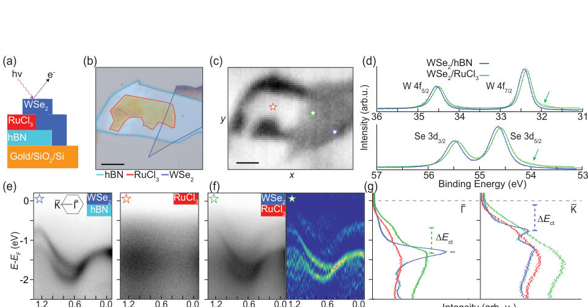
<figcaption class="paper-figure-caption"><b>Fig 3.</b> FIG. 3. Electronic structure of a SL WSe2/RuCl3/hBN heterostructure. (a) Diagram of sample and measurement configuration. (b) Optical image of the sample with hBN, RuCl3 and WSe2 flakes indicated by light blue, red and dark blue outlines, respectively. (c) Map of (x,y)-dependent ARPES intensity integrated over momentum from −0.1 to 0.1 ˚A−1 and energy from −2.5 to −3.5 eV. The scale bar in (b)-(c) is 10 µm. (d) Core level spectra (markers) with Voigt fits (lines) from WSe2/hBN and WSe2/RuCl3 areas demarcated by blue and green stars in (c), respectively. Arrows indicate a shoulder at lower binding energies. The spectra were acquired at hν = 145 eV. (e) Valence band spectra of WSe2/hBN and...</figcaption>
</figure>
</div>

<p><strong>Summary.</strong> This work uses muARPES to characterize the electrical contact formed between a 2D semiconductor (WSe2) and a layered Mott insulator ($\alpha$-RuCl3). The researchers found that forming this junction causes a measurable valence band shift, suggesting successful charge transfer for ohmic contact. Crucially, they highlight that achieving stable, high-quality contacts is extremely sensitive to the experimental handling procedures.</p>
<p><strong>Why it may be interesting.</strong> While primarily experimental condensed matter physics, the study deals with Mott insulators ($   ext{RuCl}_3$) and interface electronic structure engineering, which touches upon correlated electron phenomena and emergent quantum states at boundaries.</p>
<details>
<summary>Detailed structure</summary>
<p><strong>Main problem.</strong> The study aims to determine the electronic structure and robustness of band offsets at the interface between single-layer WSe2 and alpha-RuCl3 van der Waals charge-transfer contacts.</p>
<p><strong>Main result.</strong> Contact formation induces a significant valence band shift of (0.68 ± 0.05) eV in WSe2, establishing an ohmic contact via hole doping. However, the charge transfer effect is highly sensitive to fabrication conditions and RuCl3 degrades upon heating.</p>
<p><strong>Method.</strong> Micro-focused angle-resolved photoemission spectroscopy (muARPES) was employed to measure the electronic structure of the heterostructure in ultra-high vacuum.</p>
<p><strong>Model / system.</strong> The physical system is a van der Waals heterostructure composed of single-layer WSe2 contacted with alpha-RuCl3, which acts as a layered Mott insulator. The analysis focuses on charge transfer effects and band alignment at this interface.</p>
<p><strong>Key observables.</strong> Valence band maximum (VBM) shift ($\Delta E_{ct}$), core level peak shifts, electronic structure mapping across the Brillouin zone.</p>
<p><strong>Important parameters / regimes.</strong> Charge transfer magnitude (0.68 eV); Fermi energy relative to VBM; temperature/heating history during sample preparation.</p>
<p><strong>Assumptions / limitations.</strong> The charge transfer effect is assumed to be measurable via ARPES shifts, but its observation is critically dependent on minimizing environmental contamination and thermal stress.</p>
<p><strong>Figures summary.</strong> Figures illustrate band alignments showing the energy shift (Fig. 1), ARPES spectra confirming Mott insulating state and degradation upon heating (Fig. 2), and spatial maps/valence band dispersions comparing WSe2/hBN vs WSe2/RuCl3 contacts (Fig. 3).</p>
<p><strong>Paper structure.</strong> The paper establishes the need to characterize contact interfaces, details the muARPES methodology applied to the WSe2/RuCl3 system, presents quantitative measurements of band shifts and charge transfer, discusses the limitations imposed by sample handling and material stability, and concludes with implications for device design.</p>
</details>
<details>
<summary>Abstract</summary>
<p>The layered Mott insulator $α$-RuCl$_3$ induces degenerate hole-doping in two-dimensional semiconductors due to its large electron affinity, making it a promising charge-transfer material for establishing ohmic contacts in electronic devices. In order to assess the applicability and guide the design of devices incorporating RuCl$_3$ it is critical to determine the electronic structure and robustness of the band offsets that underpin the transport properties of semiconductors in contact with RuCl$_3$. Here, we apply micro-focused angle-resolved photoemission spectroscopy to determine the electronic structure of single-layer WSe$_2$ contacted to RuCl$_3$ on hexagonal boron nitride substrates. We find that formation of a functioning WSe$_2$/RuCl$_3$ contact leads to a valence band shift of $(0.68 \pm 0.05)$ eV towards the Fermi energy in WSe$_2$. The charge transfer effect is challenging to observe as it depends sensitively on fabrication conditions such as solvent exposure, quality of interface encapsulation and heating of RuCl$_3$, imposing strict requirements on device design to attain high-quality contacts.</p>
</details>
<p><sub><a href="#top">↑ back to top</a></sub></p>

<p><a id="paper-2606.24658"></a></p>
<h3 id="bode-fano-limits-to-broadband-absorption-by-small-particles"><a href="http://arxiv.org/abs/2606.24658v1">Bode-Fano Limits to Broadband Absorption by Small Particles</a></h3>
<p><strong>Authors:</strong> Emanuele Corsaro, Andrea Alù, Carlo Forestiere<br>
<strong>Type:</strong> theory · <strong>Category:</strong> other · <strong>PDF:</strong> <a href="https://arxiv.org/pdf/2606.24658v1">https://arxiv.org/pdf/2606.24658v1</a><br>
<strong>Analysis basis:</strong> full PDF text, analyzed in chunks
<strong>Topic relevance:</strong> <code>Keldysh / 2PI / non-Gaussian methods</code> <strong>1/5</strong> · <code>correlated / nonlocal dissipation</code> <strong>1/5</strong> · <code>driven-dissipative phase transition</code> <strong>1/5</strong> · <code>interference shaping light</code> <strong>1/5</strong> · <code>methods for driven-dissipative</code> <strong>1/5</strong></p>
<div class="figure-strip-hint">↔ Scroll figures horizontally</div>
<div class="paper-figures-scroll">
<figure class="paper-figure-card">
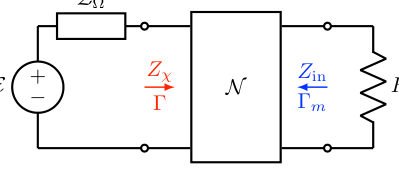
<figcaption class="paper-figure-caption"><b>Fig 1.</b> FIG. 1. (a) A generic temporally dispersive object enclosed within a sphere of radius a illuminated by a time-harmonic electric field Ei. (b) Equivalent circuit model, mapping the response of the polarization current density induced by the external field Ei within the dipolar approximation. (c) Dar- lington representation of Zχ.</figcaption>
</figure>
<figure class="paper-figure-card">
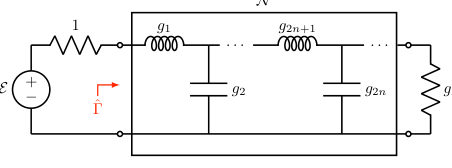
<figcaption class="paper-figure-caption"><b>Fig 2.</b> FIG. 2. Low-pass prototype in the ˆs-domain.</figcaption>
</figure>
<figure class="paper-figure-card">
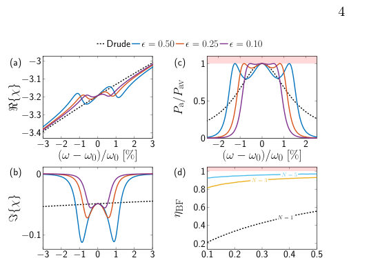
<figcaption class="paper-figure-caption"><b>Fig 3.</b> FIG. 3. Chebyshev synthesis near the Bode–Fano absorption- bandwidth limit. (a,b) Real and imaginary parts of the sus- ceptibility for third-order passive causal realizations with rip- ple parameter ϵ = 0.50, 0.25, 0.10. The dashed black curve is the matched single-pole Drude reference, N = 1. (c) Nor- malized absorbed power Pa/Pav. The shaded region marks Pa &gt; Pav, which is forbidden by passivity. Reducing ϵ im- proves the uniformity of the near-conjugate match inside the band but narrows the achievable bandwidth. (d) Normalized Bode–Fano integral ηBF versus ripple parameter. The shaded region marks ηBF &gt; 1, which is forbidden by the Bode–Fano limit. The higher-order Chebyshev realizations...</figcaption>
</figure>
</div>

<p><strong>Summary.</strong> This work derives the ultimate theoretical limits governing how much light a small particle can absorb across a given frequency bandwidth. By mapping electromagnetism to an impedance-matching circuit problem, the authors establish Bode–Fano inequalities that quantify this fundamental trade-off. The paper provides a practical synthesis route using filter design theory to engineer materials whose dispersion approaches these physical boundaries.</p>
<p><strong>Why it may be interesting.</strong> The mathematical rigor connecting classical circuit theory (filter synthesis) to fundamental electromagnetic scattering limits provides powerful analytical tools for designing nanophotonic devices operating near physical constraints, which is relevant for understanding energy transfer in quantum optical systems.</p>
<details>
<summary>Detailed structure</summary>
<p><strong>Main problem.</strong> The paper derives fundamental, rigorous absorption-bandwidth limits for passive, causal, linear, and temporally dispersive subwavelength objects.</p>
<p><strong>Main result.</strong> It establishes Bode–Fano-type constraints that quantify the ultimate trade-off between achieving high in-band absorption and maintaining a broad operational bandwidth.</p>
<p><strong>Method.</strong> The electromagnetic scattering problem is mapped onto an equivalent single-mode impedance-matching circuit model, allowing the application of complex analysis techniques like Darlington's synthesis theorem and contour integration.</p>
<p><strong>Model / system.</strong> The system analyzed is a subwavelength nanoparticle or object ($\Omega$) characterized by its material susceptibility ($\chi$) and radiation properties ($Z_\Omega$), modeled as an equivalent electrical circuit.</p>
<p><strong>Key observables.</strong> Absorption power ($P_a$), Scattering power ($P_s$), Extinction cross-section ($\sigma_e$), Reflection coefficient ($\Gamma$).</p>
<p><strong>Important parameters / regimes.</strong> Bode–Fano integral ($\eta_{BF}$), material dispersion parameters, and the order of the synthesized filter ($N$).</p>
<p><strong>Assumptions / limitations.</strong> The analysis assumes the object is passive, linear, causal, time-invariant, and that the electric dipole mode dominates due to subwavelength confinement.</p>
<p><strong>Figures summary.</strong> Figures illustrate the equivalent single-mode circuit model, Darlington representations of impedances, low-pass prototypes in the s-domain, and comparisons of synthesized absorption spectra (e.g., Chebyshev vs. Drude) against the theoretical Bode–Fano limit.</p>
<p><strong>Paper structure.</strong> The paper progresses from formulating the scattering problem via impedance matching to deriving fundamental sum rules, then refining these into rigorous Bode–Fano inequalities using complex analysis, and finally providing a constructive synthesis framework based on filter design techniques (e.g., Chebyshev realization) to approach these theoretical bounds.</p>
</details>
<details>
<summary>Abstract</summary>
<p>Nanostructures can be designed to absorb light efficiently at resonance despite their subwavelength footprint, but causality and passivity fundamentally limit the bandwidth over which strong absorption can be maintained. Here we derive fundamental absorption-bandwidth limits for passive, causal, linear, and temporally dispersive subwavelength objects by rigorously casting electromagnetic scattering as an equivalent impedance-matching problem. This mapping yields ultimate Bode-Fano-type constraints for optical absorption and provides rational synthesis guidelines for the material dispersion of passive nanoparticles that can approach the bounds. Our results clarify the ultimate limits for broadband light harvesting and dissipation, with implications for solar-energy conversion, photothermal hyperthermia, thermal management, and related nanophotonic technologies.</p>
</details>
<p><sub><a href="#top">↑ back to top</a></sub></p>

<p><a id="paper-2606.24031"></a></p>
<h3 id="a-35b-hybrid-attention-mixture-of-experts-model-on-a-6gb-2011-gpu-hand-written-4-bit-cuda-inference-for-fermi"><a href="http://arxiv.org/abs/2606.24031v1">A 35B Hybrid-Attention Mixture-of-Experts Model on a 6GB 2011 GPU: Hand-Written 4-bit CUDA Inference for Fermi</a></h3>
<p><strong>Authors:</strong> A. C. Opus, J. Q. Lu<br>
<strong>Type:</strong> experiment · <strong>Category:</strong> other · <strong>PDF:</strong> <a href="https://arxiv.org/pdf/2606.24031v1">https://arxiv.org/pdf/2606.24031v1</a><br>
<strong>Analysis basis:</strong> full PDF text, analyzed in chunks
<strong>Topic relevance:</strong> <code>analog quantum simulation</code> <strong>1/5</strong> · <code>driven-dissipative phase transition</code> <strong>1/5</strong> · <code>methods for driven-dissipative</code> <strong>1/5</strong> · <code>non-equilibrium dynamics</code> <strong>1/5</strong></p>
<div class="figure-strip-hint">↔ Scroll figures horizontally</div>
<div class="paper-figures-scroll">
<figure class="paper-figure-card">
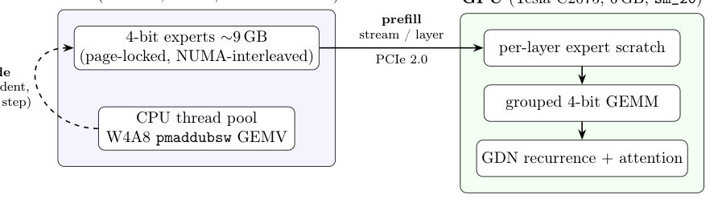
<figcaption class="paper-figure-caption"><b>Fig 1.</b> Figure 1: Hybrid execution. The 4-bit experts reside in page-locked, NUMA-interleaved host memory. Prefill streams each layer’s experts across PCIe 2.0 into a 6 GB-resident scratch buffer and runs the batched GPU kernels; decode keeps the single-token computation on the host CPU (W4A8 integer SIMD), avoiding a per-token PCIe round trip. Pruning and the prefix cache act on the prefill (GPU) path; the integer kernel acts on the decode (CPU) path.</figcaption>
</figure>
<figure class="paper-figure-card">
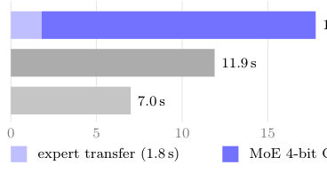
<figcaption class="paper-figure-caption"><b>Fig 2.</b> Figure 2: Where prefill time goes (single-pass, 947-token prompt; all three are GPU kernels). The MoE GEMM dominates and, after single-pass prefill, carries only 1.8 s of expert host→device transfer. The GDN recurrence (a sequential scan) and softmax attention account for the rest; the three components sum to ≈36.7 s of the 37.5 s prefill.</figcaption>
</figure>
</div>

<p><strong>Summary.</strong> This paper details an intensive hardware benchmarking study showing how to run a massive 35B MoE language model on severely outdated, resource-limited GPU hardware. The authors developed a hybrid inference engine that splits computation between the GPU (for prefill) and the CPU (for decode), achieving significant speedups by hand-optimizing kernels for legacy instruction sets.</p>
<p><strong>Why it may be interesting.</strong> While focused on LLMs, the core engineering challenge—optimizing computation flow around severe memory bandwidth and compute capability bottlenecks using custom low-level kernels—is highly relevant to simulating complex quantum many-body systems that exceed available classical memory.</p>
<details>
<summary>Detailed structure</summary>
<p><strong>Main problem.</strong> To determine the practical limits of running a contemporary, large Mixture-of-Experts (MoE) language model on severely constrained, legacy hardware.</p>
<p><strong>Main result.</strong> The authors achieved significant performance gains by implementing a hybrid execution strategy, reducing prefill latency by $\sim 34\%$ and tripling decode throughput compared to baseline methods.</p>
<p><strong>Method.</strong> A hybrid inference pipeline was designed: GPU handles batched prompt prefill using streamed expert weights, while the host CPU executes single-token decoding using a hand-written integer-SIMD kernel.</p>
<p><strong>Model / system.</strong> The system uses a 35B parameter MoE model (Qwen3.6-35B-A3B) running on an outdated NVIDIA Tesla C2075 GPU (Fermi architecture, 6GB VRAM). The process is constrained by the need to fit a $\sim 10.5 	ext{ GB}$ model onto $6 	ext{ GB}$ of memory.</p>
<p><strong>Key observables.</strong> Prefill latency (e.g., $57.2 	ext{ s} 	o 37.5 	ext{ s}$), decode throughput ($ ext{tok/s}$, e.g., $2.8 	o 8.6$), and prefix reuse time ($78 	ext{ s} 	o 0.5 	ext{ s}$).</p>
<p><strong>Important parameters / regimes.</strong> Model size (35B total, $\sim 3$B active), GPU compute capability ($ ext{sm_20}$), memory constraint ($10.5 	ext{ GB} > 6 	ext{ GB}$), and quantization level (4-bit).</p>
<p><strong>Assumptions / limitations.</strong> The study assumes the hardware limitations define a practical performance floor, as evidenced by negative results showing that standard optimizations failed to improve speed.</p>
<p><strong>Figures summary.</strong> Figure 1 illustrates the hybrid execution flow: experts are streamed from host RAM for GPU prefill and CPU decode. Figure 2 decomposes prefill time components (MoE GEMM, GDN recurrence, softmax attention).</p>
<p><strong>Paper structure.</strong> The paper details the problem setup by identifying hardware constraints, proposes a novel hybrid inference strategy combining streaming GPU prefill with CPU-based integer-SIMD decoding, and rigorously measures performance improvements across various stages like prefill, decode, and prefix caching.</p>
</details>
<details>
<summary>Abstract</summary>
<p>We report end-to-end inference of \textbf{Qwen3.6-35B-A3B} -- a 35-billion-parameter, $\sim$3B-active Mixture-of-Experts (MoE) model with a hybrid gated-delta-net / full-attention backbone -- on a \textbf{2011 NVIDIA Tesla C2075} (Fermi, compute capability \smtwenty, 6\,GB), a GPU that predates tensor cores, native FP16 arithmetic, the \texttt{DP4A} integer dot-product instruction, and support in every modern CUDA toolchain. Because the 4-bit model ($\approx$10.5\,GB) is roughly twice the device memory, we adopt a \emph{hybrid} execution strategy: the GPU performs batched prompt \emph{prefill} with expert weights streamed layer-by-layer from host RAM, while \emph{decode} runs on the host CPU using a hand-written W4A8 integer GEMV built on the SSSE3 \texttt{pmaddubsw} instruction. The entire engine -- GEMM, hybrid-attention recurrence, MoE routing, and a from-scratch vision tower -- is written by hand for \smtwenty{} and compiled with the legacy CUDA 8.0 toolchain. On a 947-token prompt we reduce prefill latency from 57.2\,s to 37.5\,s ($-34\%$) through expert pinning, single-pass prefill, and NUMA interleaving, and we raise decode throughput from 2.8 to 8.6\,\tps{} ($\approx 3\times$) with the integer-SIMD kernel. A position-indexed snapshot cache for the recurrent (gated-delta-net) state restores prefix reuse on a recurrent architecture, cutting a repeated 78\,s prefill to 0.5\,s. We also report a set of \emph{negative} results -- offloading the language-model head to the idle GPU, hyper-threading, and three GPU-kernel rewrites all fail to help -- % which together pin down the practical floor of this hardware. Our aim is not a speed record but a careful account of what it takes, and where the walls are, to run a contemporary frontier-class MoE on fourteen-year-old silicon.</p>
</details>
<p><sub><a href="#top">↑ back to top</a></sub></p>

<p><a id="paper-2606.23990"></a></p>
<h3 id="observation-of-even-denominator-fractional-quantum-hall-states-at-math1095math-and-54-in-the-lowest-landau-level"><a href="http://arxiv.org/abs/2606.23990v1">Observation of even-denominator fractional quantum Hall states at $ν= 3/4$ and 5/4 in the lowest Landau level</a></h3>
<p><strong>Authors:</strong> Siddharth Kumar Singh, Chengyu Wang, Adbhut Gupta, Kirk W. Baldwin, Loren N. Pfeiffer, Mansour Shayegan<br>
<strong>Type:</strong> both · <strong>Category:</strong> strongly correlated electrons · <strong>PDF:</strong> <a href="https://arxiv.org/pdf/2606.23990v1">https://arxiv.org/pdf/2606.23990v1</a><br>
<strong>Analysis basis:</strong> full PDF text, analyzed in chunks
<strong>Topic relevance:</strong> <code>analog quantum simulation</code> <strong>1/5</strong> · <code>driven-dissipative phase transition</code> <strong>1/5</strong></p>
<div class="figure-strip-hint">↔ Scroll figures horizontally</div>
<div class="paper-figures-scroll">
<figure class="paper-figure-card">
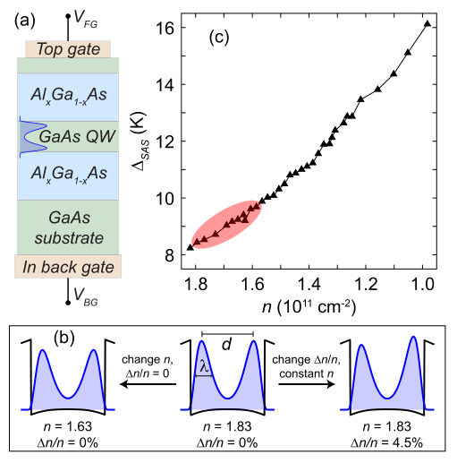
<figcaption class="paper-figure-caption"><b>Fig 1.</b> FIG. 1. (a) Device schematic. (b) Self-consistent Schr¨odinger and Poisson (Hartree) calculations for the charge distribution and potential in a 72.5-nm-wide GaAs QW, showing the effect of changing the density (n) and the charge distribution asym- metry (∆n/n) using the front and back gates. (c) Measured ∆SAS in our sample plotted as a function of n. The shaded, red region marks the range relevant for the data presented in this manuscript.</figcaption>
</figure>
<figure class="paper-figure-card">
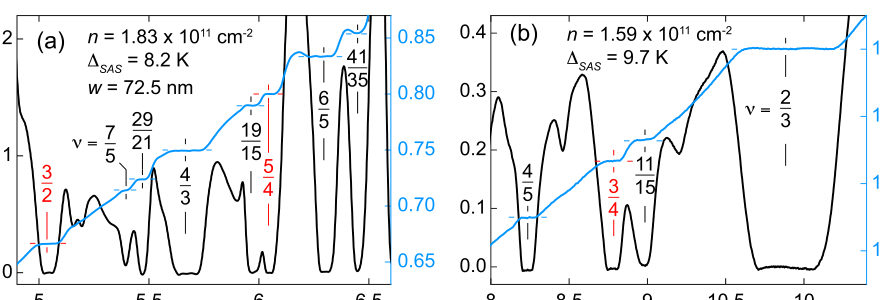
<figcaption class="paper-figure-caption"><b>Fig 2.</b> FIG. 2. (a,b) Rxx (black) and Rxy (blue) traces taken at T ≃33 mK, for a 72.5-nm-wide GaAs sample with n = 1.83 and 1.59, respectively. Strong even-denominator FQHSs are observed at ν = 3/2, 5/4, and 3/4. Spontaneously imbalanced, bilayer FQHSs are observed in close vicinity of the 5/4 and 3/4 FQHSs at ν = 19/15 and 11/15, respectively. Vertical lines mark the expected positions of the odd- and even-denominator FQHSs, and horizontal lines mark the expected positions for the Hall plateaus.</figcaption>
</figure>
<figure class="paper-figure-card">
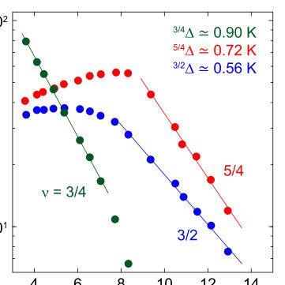
<figcaption class="paper-figure-caption"><b>Fig 3.</b> FIG. 3. Arrhenius plots of the Rxx minima at ν = 3/2 (blue), 5/4 (red) and 3/4 (green) FQHSs at n = 1.83, allowing us to extract their energy gaps as indicated in the upper right corner.</figcaption>
</figure>
<figure class="paper-figure-card">
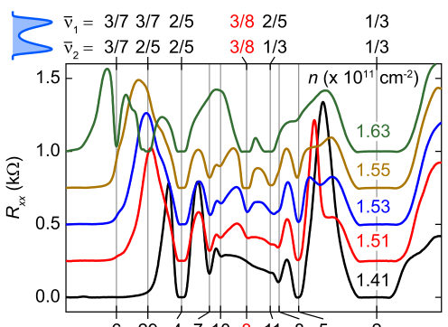
<figcaption class="paper-figure-caption"><b>Fig 4.</b> FIG. 4. Evolution of the ground state at ν = 3/4 from a CF Fermi sea to a FQHS as the density is raised. Rxx traces are shifted vertically for clarity. The 2DES becomes 2C at high density, signaled by the disappearance of the 1C, odd- numerator FQHSs at ν = 5/7 and 7/9, and the emergence of 2C, bilayer FQHSs at ν = 6/7, 29/35, and 11/15. The layer fillings ¯ν1 and ¯ν2 associated with the observed FQHSs are shown above the figure.</figcaption>
</figure>
<figure class="paper-figure-card">
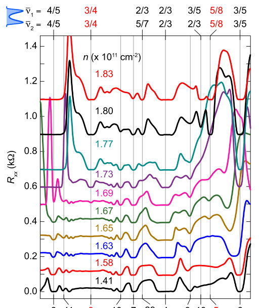
<figcaption class="paper-figure-caption"><b>Fig 5.</b> FIG. 5. Evolution of the 2DES around ν = 3/2 and 5/4 as the density is raised. For clarity, Rxx traces are shifted vertically. With increasing n, the states at ν = 3/2 and 5/4 evolve from compressible Fermi seas to incompressible FQHSs. 1C to 2C transitions can be observed at the even-numerator ν = 4/3 FQHS at n = 1.73, and the ν = 6/5 FQHS at n = 1.69. The odd-numerator FQHSs at ν = 11/7, 7/5 and 9/7 become weak or disappear, while new FQHSs emerge at ν = 19/15 and 29/21 at n = 1.83.</figcaption>
</figure>
</div>

<p><strong>Summary.</strong> This paper reports the discovery of stable even-denominator Fractional Quantum Hall States at $\nu=3/4$ and $5/4$ in GaAs quantum wells. The findings are explained by a theoretical model involving two-component bilayer composite fermions, highlighting that these states rely critically on maintaining symmetry in the electron charge distribution.</p>
<p><strong>Why it may be interesting.</strong> This work provides detailed experimental evidence for exotic correlated electron phases (FQHSs) that emerge due to the interplay between orbital quantization (Landau levels), strong Coulomb interactions, and structural degrees of freedom (bilayer coupling).</p>
<details>
<summary>Detailed structure</summary>
<p><strong>Main problem.</strong> The research focuses on discovering and characterizing novel even-denominator Fractional Quantum Hall States (FQHSs) at filling factors $\nu=3/4$ and $5/4$. These states are studied in the context of wide quantum wells exhibiting bilayer characteristics.</p>
<p><strong>Main result.</strong> Robust even-denominator FQHSs are observed, which are explained by a two-component, bilayer composite fermion framework. The stability of these states is highly dependent on maintaining charge distribution symmetry.</p>
<p><strong>Method.</strong> The study combines low-temperature transport measurements ($R_{xx}, R_{xy}$) with theoretical modeling using composite fermion theory and analyzing the system's response to controlled charge asymmetry.</p>
<p><strong>Model / system.</strong> The physical platform is a two-dimensional electron system (2DES) confined in wide GaAs quantum wells, which naturally supports a bilayer charge distribution. The physics is governed by strong Coulomb interactions and tunable interlayer tunneling.</p>
<p><strong>Key observables.</strong> Longitudinal resistance minima ($R_{xx}$), energy gaps ($\nu\Delta$), and the critical charge asymmetry $(\Delta n/n)_C$ required to destabilize the FQHSs.</p>
<p><strong>Important parameters / regimes.</strong> Filling factors $\nu=3/4, 5/4, 3/2$; interlayer tunneling strength ($\alpha$); charge distribution symmetry ($\Delta n/n$).</p>
<p><strong>Assumptions / limitations.</strong> The analysis assumes that the FQHSs can be described by generalizations of composite fermion wavefunctions (e.g., Scarola-Jain bilayer framework).</p>
<p><strong>Figures summary.</strong> Figures illustrate $R_{xx}$ and $R_{xy}$ traces confirming FQHS plateaus at $\nu=3/2, 5/4,$ and $3/4$, and show how these states evolve or disappear when the charge distribution symmetry is intentionally broken.</p>
<p><strong>Paper structure.</strong> The paper progresses by first establishing the experimental observation of even-denominator FQHSs in wide QWs. It then develops a theoretical explanation linking these states to bilayer composite fermion physics, detailing their dependence on interlayer tunneling and charge symmetry.</p>
</details>
<details>
<summary>Abstract</summary>
<p>Two-dimensional electron systems (2DESs) confined to wide GaAs quantum wells provide a unique platform to study exotic fractional quantum Hall states (FQHSs) because the 2DES has a bilayer charge distribution with significant interlayer tunneling. Precise control over the 2DES density allows the tuning of the interlayer tunneling over a wide range. Here, we present our discovery of new even-denominator FQHSs in the lowest Landau level (orbital index \textit{N} = 0) at filling factors $ν= 3/4$ and 5/4 in an ultrahigh-quality 2DES confined to a 72.5-nm-wide GaAs quantum well. The ground states at $ν= 3/4$ and 5/4 both evolve from composite fermion Fermi seas to FQHSs as the density is raised so that interlayer tunneling is sufficiently reduced and the 2DES becomes two-component, signaled by the behavior of the FQHSs flanking $ν= 3/4$ and 5/4. The two-component nature of the $ν=3/4$ and 5/4 FQHSs is also evident from their extreme sensitivity to the bilayer charge distribution symmetry: both states disappear quickly when the charge distribution is made asymmetric by only $\simeq 2\%$. We find a natural explanation for the 3/4 and 5/4 FQHSs in terms of two states linked by particle-hole symmetry, and using the Scarola-Jain bilayer composite fermion framework which is a generalization of the well-known, two-component, Halperin state ($Ψ_{331}$ state). Our observations elucidate the crucial role of competing energy and length scales in wide quantum wells in stabilizing new ground states.</p>
</details>
<p><sub><a href="#top">↑ back to top</a></sub></p>

<p><a id="paper-2606.24308"></a></p>
<h3 id="the-effect-of-pressure-on-the-splitting-in-math1117mathhe-in-nematic-aerogel"><a href="http://arxiv.org/abs/2606.24308v1">The effect of pressure on the splitting in $^3$He in nematic aerogel</a></h3>
<p><strong>Authors:</strong> V. V. Dmitriev, D. V. Petrova, A. A. Soldatov, A. N. Yudin<br>
<strong>Type:</strong> experiment · <strong>Category:</strong> statistical mechanics · <strong>PDF:</strong> <a href="https://arxiv.org/pdf/2606.24308v1">https://arxiv.org/pdf/2606.24308v1</a><br>
<strong>Analysis basis:</strong> full PDF text, analyzed in chunks
<strong>Topic relevance:</strong> <code>Keldysh / 2PI / non-Gaussian methods</code> <strong>1/5</strong> · <code>driven-dissipative phase transition</code> <strong>1/5</strong></p>
<div class="figure-strip-hint">↔ Scroll figures horizontally</div>
<div class="paper-figures-scroll">
<figure class="paper-figure-card">
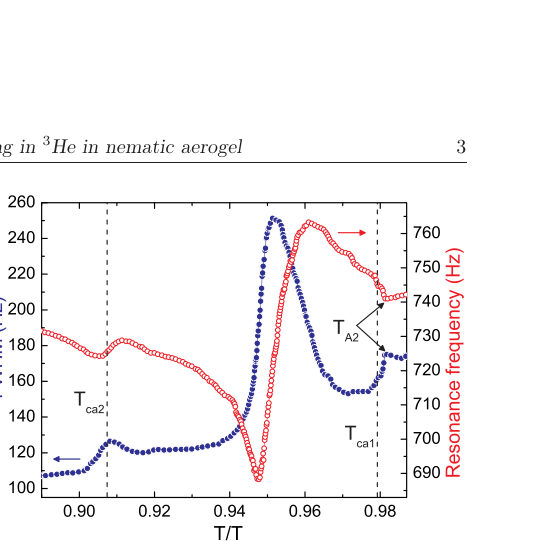
<figcaption class="paper-figure-caption"><b>Fig 1.</b> Fig. 1. (Color online) Temperature dependence of FWHM (filled symbols, left axis) and the resonance frequency (open symbols, right axis) of the main mode of the aerogel VW without 4He layers at pressure of 15.4 bar in magnetic field of 30.7 kOe. Dashed lines indicate the superfluid transition temperatures in aerogel. Arrows indicate A1-A2 transition in bulk 3He (TA2). The x-axis represents the temperature normalized to the superfluid transition temperature in bulk 3He, Tc = 2.083 mK.</figcaption>
</figure>
<figure class="paper-figure-card">
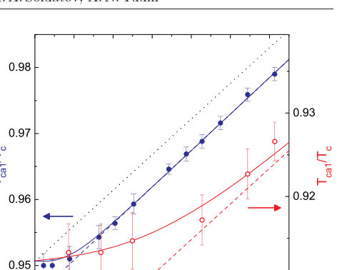
<figcaption class="paper-figure-caption"><b>Fig 2.</b> Fig. 3. (Color online) The upper superfluid transition temperature in nematic aerogel without 4He coverage at pressures of 15.4 bar (left scale, filled symbols, Tca ≈ 0.951Tc) and 7.1 bar (right scale, open symbols, Tca ≈ 0.912Tc). The dotted line represents the bulk upper phase transition for both pressures scaled to their corresponding Tca/Tc (coincide due to the chosen axis scaling) [3]. For both pressures, the solid lines are the best fit of our data with Eq. (4), where η0 1 was set to the value expected for bulk A1 phase [3]. For 7.1 bar α0 ≈0.047 kOe−1 was fixed according to the theory as well, while for 15.4 bar α0 was a fitting parameter resulting in α ≈0.215 kOe−1 which is basically 6...</figcaption>
</figure>
<figure class="paper-figure-card">
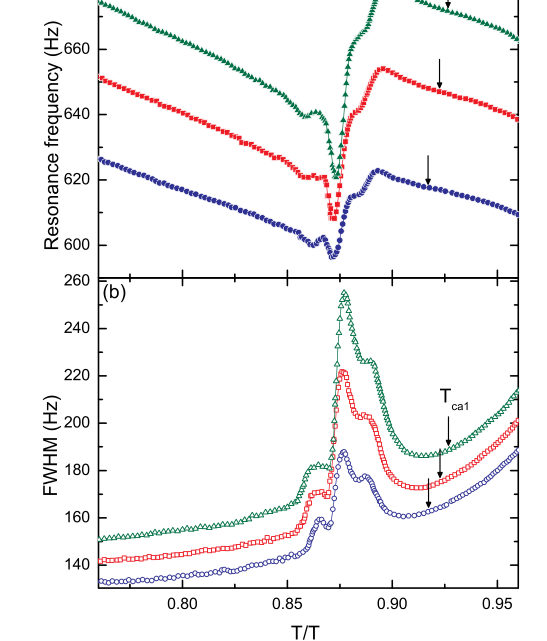
<figcaption class="paper-figure-caption"><b>Fig 3.</b> Fig. 2. (Color online) Temperature dependence of the resonance frequency (a) and FWHM (b) of the main mode of the aerogel VW without 4He layers at pressure of 7.1 bar in magnetic fields of 21.4 kOe (circles), 27.2 kOe (squares), and 30.7 kOe (triangles). For clarity, the squares and triangles in the panel (a) are down- shifted by 60 Hz and 80 Hz respectively. Arrows indicate the upper critical temperature. Tc = 1.643 mK.</figcaption>
</figure>
<figure class="paper-figure-card">
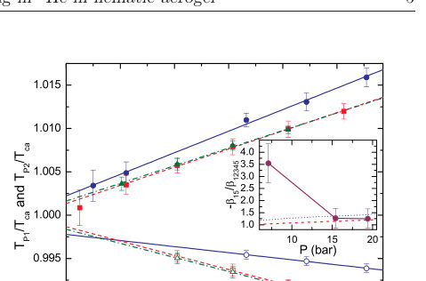
<figcaption class="paper-figure-caption"><b>Fig 4.</b> Fig. 5. (Color online) The upper (filled symbols) and lower (open symbols) transition temperatures in nematic aerogel with 4He coverage at pressures of 7.1 bar (circles, Tca ≈0.963Tc), 15.4 bar (squares, Tca ≈ 0.980Tc), and 19.4 bar (triangles, Tca ≈0.985Tc) with their corresponding linear approximations. Here, Tca ≡ (TP 1 |H=0 + TP 2 |H=0 ) /2. The linear fits do not match at H = 0 presumably due to a systematic error caused by finite temperature width of the superfluid transition. The inset shows the dependence of the ratio of slopes of the fit lines obtained from our experimental data defined as −β15/β12345 (see Eq. (3)), the same ratio calculated using data from [31] obtained in experiments...</figcaption>
</figure>
<figure class="paper-figure-card">
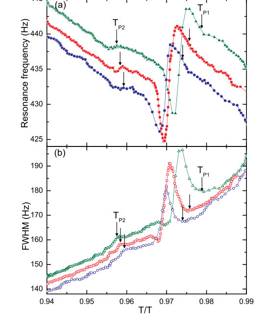
<figcaption class="paper-figure-caption"><b>Fig 5.</b> Fig. 4. (Color online) Temperature dependence of the resonance frequency (a) and FWHM (b) of the main mode of the aerogel VW with 4He coverage at pressure of 7.1 bar in magnetic fields of 6.7 kOe (circles), 8.9 kOe (squares), and 11.1 kOe (triangles). For clarity, the squares and triangles in the panel (a) are down-shifted by 14 Hz and 31 Hz respectively, the triangles in the panel (b) are up-shifted by 5 Hz. Arrows indicate the superfluid transition temperatures in aerogel.</figcaption>
</figure>
</div>

<p><strong>Summary.</strong> The research investigates how pressure influences the superfluid transition temperature splitting of $^3$He confined in nematic aerogels. By comparing results from samples coated with $  ext{}^4 ext{He}$ versus pure $^3$He, the authors test theoretical models describing boundary effects. The findings suggest that coating the pores leads to a more theoretically consistent description of the phase transitions under pressure.</p>
<p><strong>Why it may be interesting.</strong> This work bridges condensed matter physics (superfluidity, phase transitions) with materials science (porous media confinement), providing experimental validation for complex boundary condition effects on quantum fluid behavior.</p>
<details>
<summary>Detailed structure</summary>
<p><strong>Main problem.</strong> The study investigates how external pressure affects the splitting of the superfluid transition temperature ($T_c$) in $^3$He confined within anisotropic nematic aerogels.</p>
<p><strong>Main result.</strong> The presence of a $    ext{}^4 ext{He}$ coating on the aerogel strands leads to a more symmetric field dependence for the transition splitting, which shows better agreement with theoretical predictions at higher applied pressures compared to pure $^3$He samples.</p>
<p><strong>Method.</strong> Measurements were performed using a vibrating wire (VW) resonator and quartz tuning fork for thermometry while applying varying magnetic fields and pressures. Transition temperatures were determined by analyzing resonance frequency and Full Width at Half-Maximum (FWHM).</p>
<p><strong>Model / system.</strong> The system is superfluid $^3$He confined in nematic aerogels, comparing boundary conditions: specular reflection (with $    ext{}^4 ext{He}$ coating) versus diffuse scattering/impurity effects (pure $^3$He). Theoretical models include Ginzburg-Landau coefficients and impurity magnetization descriptions.</p>
<p><strong>Key observables.</strong> Superfluid transition temperature splitting ($\Delta T$), resonance frequency, Full Width at Half Maximum (FWHM), and the ratio of slopes of the transitions with respect to magnetic field ($H$).</p>
<p><strong>Important parameters / regimes.</strong> Applied pressure (e.g., 7.1 bar, 15.4 bar, 19.4 bar) and applied magnetic field ($H$ up to $31 	ext{ kOe}$).</p>
<p><strong>Assumptions / limitations.</strong> The analysis distinguishes between boundary scattering mechanisms ($ ext{}^4 ext{He}$ coating vs. pure $ ext{}^3 ext{He}$) and compares observed nonlinearities against established theoretical models.</p>
<p><strong>Figures summary.</strong> Figures illustrate the temperature dependence of FWHM and resonance frequency for both coated and uncoated samples at various pressures, highlighting the distinct transition regimes ($T_{ca1}, T_{ca2}$ vs. $T_{P1}, T_{P2}$).</p>
<p><strong>Paper structure.</strong> The paper systematically compares experimental results under varying pressure and boundary conditions ($   ext{}^4 ext{He}$ coating vs. pure $ ext{}^3 ext{He}$) to resolve discrepancies between previous measurements and theoretical predictions regarding $T_c$ splitting.</p>
</details>
<details>
<summary>Abstract</summary>
<p>Here, we present the results of an investigation of how the pressure affects the splitting of the superfluid transition temperature in $^3$He in anisotropic aerogel. It is well known that boundary conditions significantly influence the properties of superfluid phases in aerogel. When aerogel strands are coated with a $^4$He layer in magnetic field, new phases, such as the polar, polar-distorted A (DA), polar-distorted B (DB), and $β$ phases, become energetically favorable. In contrast, without this coating, the system tends to favor phases resembling the bulk A, B, and A$_1$ phases. Our earlier results showed a nonlinear dependence of the superfluid transition temperature splitting in pure $^3$He, but the range of nonlinearity did not match the theoretical predictions based on magnetic scattering effects. To further investigate this discrepancy, we performed measurements of the splitting under varying pressures for both pure $^3$He and with $^4$He coverage of the aerogel strands.</p>
</details>
<p><sub><a href="#top">↑ back to top</a></sub></p>

<hr>
<p>
<a href="index.html">← Index</a>
 · <a href="papers_05.html">← Previous</a>
</p>
<hr>

</body>
</html>
